반도체공학 Ch.7 — pn 접합 · 강의 통합 해설
슬라이드 원문과 그 쪽을 설명하던 강의 육성을 한자리에 놓았다. 고등학교 수학(미분 = 변화의 빠르기)만 알면 읽히도록 풀었고, 전문 용어는 나올 때마다 일상어로 다시 설명한다. 원문에 있는 줄은 손글씨까지 하나도 빠뜨리지 않았고, 강의에서 한 말도 어느 쪽에 속하는지 전부 배정했다.
강의 전사 908줄 전부 쪽별로 배정 완료 (커버리지 100%). 빠진 대목 없음.
원문손글씨 필기강의에서 한 말자료에 없는 내용강의 중 판서시험 포인트정리 · 배경
1쪽표지 — Ch.7 The pn Junction
Semiconductor Engineering
Ch. 7 The pn Junction
Dept. of Electrical Engineering · Jeongkyun Roh
반도체공학 7장, pn 접합(pn junction)이다. 노정균 교수님 강의다.
pn 접합 = p형 반도체와 n형 반도체를 맞붙인 경계. 다이오드, 트랜지스터, 태양전지 같은 거의 모든 반도체 소자 안에 이 경계가 들어 있다.
그래서 이 장은 뒤에 나오는 소자 단원들의 바닥이 된다.
강의 ①00:00 "이번 챕터는 너무나 더 중요한 pn 정션에 대한 내용입니다. pn junction은 모든 반도체 소자에 포함되어 있는 구조체로서, 반도체 소자의 동작을 결정하는 아주 중요한 개념이라고 할 수 있겠습니다."
강의 ①00:19 "마찬가지로 한글로 이제 오버뷰를 진행을 하고 진도 나가보도록 하죠."
자료에 없음 ①00:19 강의 진행 방식. Overview(2쪽)·목차(3쪽)는 한국어로 판서하며 설명하고, 4쪽부터 본문은 영어로 진행했다(①19:02부터 영어).
2쪽Overview — 4장 복습에서 7장으로
PDF 의 이 쪽은 제목만 있고 비어 있다. 아래 내용은 전부 강의 영상의 판서에서 건진 것이다. 교수님이 12분 넘게 써 내려간 4장 복습 + 7장 목표 한 장 요약이다.
Chapter 7 · Overview
빈 쪽이다. 교수님은 여기에 "7장을 이해하려면 4장을 다시 봐야 한다"는 내용을 손으로 채웠다.
판서 ①00:27~12:56 이 쪽에 쌓인 판서 전체(마지막 프레임).
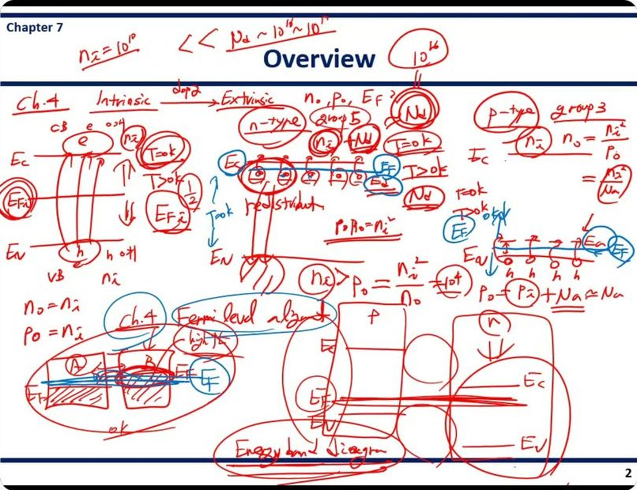
① 진성 반도체 — 4장 복습
판서 ①01:07~03:13 [판서] Ch.4 Intrinsic —dope→ Extrinsic · n₀, p₀, EF ?
[판서] CB(e)·VB(h) 그림, T = 0K / T > 0K, EFi 에 동그라미, "½", n₀ = nᵢ, p₀ = nᵢ
4장의 질문 세 개(n₀, p₀, EF)를 먼저 써 놓고, 도핑 전후로 그 셋이 어떻게 바뀌는지 차례로 따라간다. 7장 내내 이 세 값을 쓴다.
[판서] Intrinsic: T=0K → VB 꽉, CB 텅 / T>0K → e 가 점프, 아래에 h
진성(intrinsic) 반도체 = 불순물을 넣지 않은 순수한 실리콘.
CB(전도대) = 전자가 자유롭게 돌아다닐 수 있는 위층. VB(가전자대) = 전자가 원자에 묶여 꽉 차 있는 아래층.
0 K 에서는 아래층이 꽉, 위층이 텅 비어 전류가 없다. 온도가 오르면 일부 전자가 열을 받아 위층으로 뛰어오르고, 떠난 자리에 정공(hole, 전자가 빠진 빈자리)이 생긴다.
전자와 정공이 짝으로 생기므로 둘 다 nᵢ 개다. 그래서 n₀ = p₀ = nᵢ.
[판서] EFi (동그라미) · ½
페르미 준위(EF)의 정의 두 가지를 다시 짚었다.
① 0 K 에서 그 아래는 꽉 차 있고 그 위는 텅 빈 경계선.
② 그 높이에 상태가 있다면 전자가 차 있을 확률이 ½ 인 높이.
진성 반도체에서는 이 선(EFi, i = intrinsic)이 밴드갭 한가운데쯤에 있다. 정확히 가운데는 아니다. 위아래 층의 "자리 수(유효 상태밀도)"가 조금 다르기 때문이다.
강의 ①02:22 "인트린직 페르미 레벨의 위치는 이 밴드갭 중간쯤이라고 했습니다. 완벽하게 중간은 아닐 수가 있죠. … 그런데 이제 얼추 중간쯤이다."
② n형 — 5족 도핑
[판서] n-type · group 5 · nᵢ + Nd · T=0K / T>0K · Ec 바로 아래 도너 준위(전자 ⊖ 동그라미) · Ed, EF (파란 동그라미)
5족 원소(인 P 등)를 넣으면 최외각 전자가 하나 남는다. 이 남는 전자가 머무는 자리가 도너 준위(donor state)이고, 전도대 바로 아래에 생긴다.
0 K 에서는 전자가 도너 준위에 머물러 있다. 온도가 오르면 아주 작은 에너지만으로 전도대로 올라간다. 이것을 "전자를 준다(donate)"고 해서 도너라 부른다.
그래서 전도대 전자 수는 원래의 nᵢ 에 Nd(도너 원자 수)가 더해진다.
[판서] nᵢ = 10¹⁰ ≪ Nd ~ 10¹⁶ ~ 10¹⁹ (10¹⁶ 동그라미)
≪ 는 "압도적으로 작다"는 기호다. 작은 쪽은 버려도 된다는 신호다.
실리콘의 nᵢ 는 약 10¹⁰ cm⁻³ 이다. 실제 도핑 농도는 10¹⁶~10¹⁹ cm⁻³ 이다. 백만 배 이상 차이가 난다.
그래서 n₀ = nᵢ + Nd ≈ Nd 로 근사한다. 7장의 공식들(11쪽 n₀ ≈ Nd)이 전부 이 근사 위에 서 있다.
[판서] redistribution · p₀n₀ = nᵢ² · nᵢ > p₀ = nᵢ²/n₀ = 10⁴
전자가 늘었다고 정공 수가 nᵢ 그대로인 것은 아니다. 늘어난 전자가 정공 자리로 떨어져 재결합하면서 정공이 줄어든다.
얼마나 줄었는지는 질량작용 법칙 n₀p₀ = nᵢ² 로 구한다. "전자 수 × 정공 수 = 일정"이라는 뜻이다.
Nd = 10¹⁶, nᵢ = 10¹⁰ 이면 p₀ = 10²⁰/10¹⁶ = 10⁴. 원래 10¹⁰ 이던 정공이 10⁴ 으로 백만 분의 일이 된다.
[판서] EF 를 도너 준위 위에 (파란 선) · T=0K
n형의 EF 위치를 정의 ①만으로 끌어냈다.
0 K 에서 도너 준위에는 전자가 차 있다. EF 아래는 다 차 있어야 하므로 EF 는 도너 준위보다 위, 즉 전도대 근처에 있어야 한다.
도핑을 더 진하게 하면 전도대 쪽으로 더 다가간다.
③ p형 — 3족 도핑
[판서] p-type · group 3 · Ev 바로 위 억셉터 준위 · h h h h · p₀ = pᵢ + Na ≈ Na · n₀ = nᵢ²/p₀ = nᵢ²/Na
3족 원소(붕소 B 등)는 전자가 하나 모자란다. 그래서 가전자대 바로 위에 억셉터 준위(acceptor state), 즉 "전자를 받아들일 빈자리"를 만든다.
온도가 오르면 가전자대 전자가 그 빈자리로 올라가고, 가전자대에는 정공이 남는다. 그래서 정공 수에 Na 가 더해지고 p₀ ≈ Na.
전자 수는 마찬가지로 재결합으로 줄어 n₀ = nᵢ²/Na.
[판서] EF (파란 동그라미) 를 억셉터 준위 아래로
0 K 에서 억셉터 준위는 텅 비어 있다. EF 위는 비어 있어야 하므로 EF 는 억셉터 준위보다 아래, 즉 가전자대 근처다.
④ 페르미 준위 정렬 → 7장의 목표
[판서] Ch.4 · Fermi level alignment · A | B 두 물질, B 의 EF 가 높음 · high E · "ok"
4장에서 가장 중요했던 것으로 페르미 준위 정렬을 다시 꺼냈다.
B 의 EF 가 A 보다 높다는 것은 B 에 더 높은 에너지의 전자가 있다는 뜻이다. 둘을 붙이면 그 전자들이 낮은 쪽(A)으로 넘어간다.
넘어가기를 멈추는 때가 두 EF 가 같은 높이가 된 때다. 물이 높은 통에서 낮은 통으로 흘러 수면이 같아지는 것과 같다.
[판서] p | n 블록, Ec · EF · Ev 를 가로로 맞춤, n 쪽 ⇓ · "Energy band diagram" (동그라미)
p형(EF 가 아래)과 n형(EF 가 위)을 붙이면 EF 를 맞추기 위해 n형 밴드 전체가 아래로 내려가야 한다.
양 끝은 그릴 수 있다. 문제는 가운데(경계 근처)가 어떤 모양으로 이어지는지 모른다는 것이다.
그 모양을 구해 에너지 밴드 다이어그램을 완성하는 것이 7장의 첫 번째 일이다.
강의 ①00:27 "챕터7을 완벽히 이해하기 위해서는 챕터4에서 배운 내용들을 복습을 잘 해야 됩니다."
강의 ①04:53 "Ni가 이제 일반적으로는 10의 10승 이렇게 얘기를 하는데, 우리가 도핑을 할 때는 이제 10의 16승에서 10의 19승 이렇게 큰 농도를 하거든요. 그래서 얘가 훨씬 더 크기 때문에 이렇게 근사를 할 수 있는 거죠."
강의 ①05:16 "그러면 홀의 개수에는 변화가 없어야 되는데, 변화가 실제로는 있었죠. 왜 있었습니까? … 일부 일렉트론이 이렇게 떨어졌어요. … 그래서 홀의 개수가 줄어듭니다."
강의 ①06:30 "T가 0K일 때 도너 레벨에는 일렉트론이 이렇게 머물고 있습니다. 그럼 페르미 레벨 위치는 도너 레벨보다는 위에 있어야 된다는 거 알 수 있죠. … 도핑 농도가 또 올라가면 올라갈수록 컨덕션 밴드 근처로 더 가까워지죠."
강의 ①12:13 "이 가운데에서 어떻게 된지 우리가 지금 모르는 거예요. … 정션 부분에서 어떤 모양으로 될지 알아보는 게 챕터 세븐에서 첫 번째 할 일입니다."
강의 ①12:26 "이 에너지 밴드 다이어그램을 다 그리게 되면 PN 정션에서 일어나는 기본적인 특징들을 다 이해를 할 수 있습니다. 바이어스를 안 가했을 때, 리버스를 가했을 때, 아니면 포워드를 가했을 때 전류가 흐르는지 안 흐르는지를 … 다 알 수가 있는 거죠."
자료에 없음 ①02:41 EF 위치를 외우지 말고 정의(0 K 에서 아래는 꽉, 위는 텅)로 끌어내라는 풀이 방식. n형은 "도너 준위가 0 K 에 차 있으니 EF 는 그 위", p형은 "억셉터 준위가 0 K 에 비어 있으니 EF 는 그 아래". 슬라이드에는 결과 그림만 있다.
자료에 없음 ①05:54 수치 감각 예: Nd = 10¹⁶, nᵢ = 10¹⁰ 이면 p₀ = 10⁴. 소수 캐리어가 "많이 줄어든다"는 말을 숫자로 보여 줬다.
★ 강조 — "챕터 4 복습"을 처음(①00:27)과 끝(①12:45)에 두 번 당부했다. 7장 식은 전부 4장의 n₀ ≈ Nd, p₀ ≈ Na, n₀p₀ = nᵢ², 페르미 준위 정렬 위에 세워진다. 그리고 이 장의 목표는 pn 접합의 에너지 밴드 다이어그램을 완성하는 것이라고 못 박았다.
정리 도핑 → 다수 캐리어 ≈ 도핑 농도, 소수 캐리어 = nᵢ²/도핑 농도. EF 는 n형이면 위, p형이면 아래. 둘을 붙이면 EF 가 한 줄로 맞춰지고, 그 사이 모양을 구하는 것이 7장이다.
3쪽Contents — 7장 지도
7.1 Basic Structure of the PN Junction
pn 접합의 기본 구조. p형과 n형을 붙이면 경계에 무엇이 생기는지(공핍 영역, 전기장).
7.2 Zero Applied Bias
바이어스 0, 즉 외부 전압을 안 건 상태. 경계의 전기장·전위·밴드 모양을 식으로 구한다.
바이어스(bias) = 소자에 걸어 주는 직류 전압.
7.3 Reverse Applied Bias
역방향 바이어스. p 쪽에 −, n 쪽에 + 를 건 상태. 전류가 왜 안 흐르는지 본다.
7.4 Junction Breakdown
접합 항복. 역방향 전압을 계속 올리면 어느 순간 전류가 갑자기 터진다.
7.5 Nonuniformly Doped Junction
도핑이 고르지 않은 접합. 실제 공정으로 만든 접합은 농도가 위치마다 다르다.
판서 ①12:58~18:56 목차 옆에 7.1~7.5 를 그림으로 하나씩 미리 그렸다.
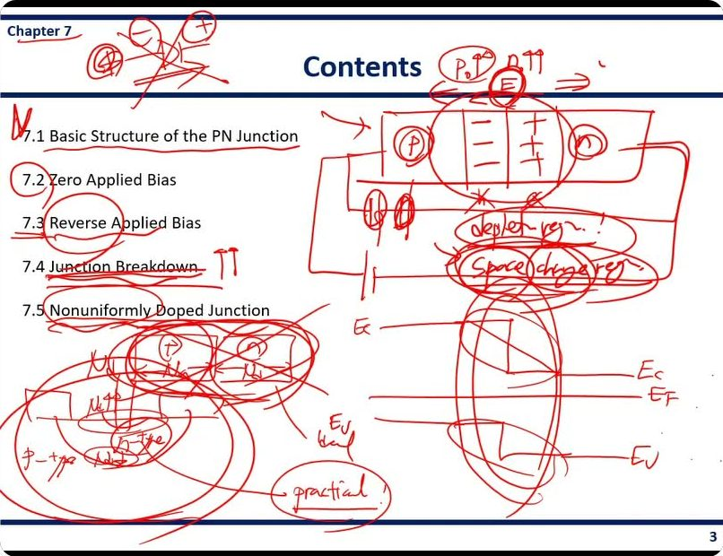
판서 ①13:02~15:50 [판서] (p) | − − | + + | (n) 블록, 위에 p₀↑ n₀↑, E (동그라미) ⇒, "depletion reg.!" "space charge reg." (동그라미)
7.1 의 미리보기다. p 쪽엔 정공이, n 쪽엔 전자가 많다(p₀↑, n₀↑). 경계에 −, + 만 남은 띠를 그리고 거기에 두 가지 이름을 나란히 붙였다. 같은 영역의 다른 이름이라는 점을 보여 주려는 판서다.
판서 ①16:02~16:24 [판서] Ec, EF, Ev 를 왼쪽 높게·오른쪽 낮게, 가운데를 계단/직선 두 가지로 그려 봄
7.2 의 질문을 그림으로 던졌다. 가운데가 직선으로 내려가는지, 계단으로 내려가는지 모른다. 답은 9~10쪽에서 "포물선 두 개를 이은 S 자"로 나온다.
판서 ①16:27~16:46 [판서] 전지 기호(−|+) 를 p·n 에 연결 (⊖ p, ⊕ n) — 7.3 역방향 바이어스 연결.
판서 ①17:15~18:24 [판서] (p) Na | (n) Nd 두 블록 → "ideal" / p-type 기판(Sub) 에 n-type 영역을 판 그림, Nd↑↑ → "practical!"
7.5 의 미리보기다. 균일한 블록 두 개를 붙이는 그림은 이상(ideal)이고, 기판에 불순물을 넣어 만드는 그림이 실제(practical)다. 표면에서 농도가 가장 높고 깊이 들어갈수록 낮아진다.
강의 ①13:27 "우리가 챕터5에서 배웠듯이 차지 캐리어가 움직이는 두 가지 특성, 드리프트 또는 디퓨전이었잖아요. 그러면 이 상황에서는 농도 차이가 있기 때문에 … 디퓨전이 일어납니다."
강의 ①14:48 "이 NA−는 우리가 이제 도핑을 한 거기 때문에, 도핑 아톰이기 때문에, 임퓨리티 아톰이라서, 공간적으로 박혀 있습니다. 그래서 이것은 이제 공간 전하라고 하는 거예요."
강의 ①15:30 "자유전자가, 자유 전하가 없기 때문에 depletion 영역이라고 하기도 한다."
강의 ①16:34 "다이오드에서 원래 p타입 쪽에 플러스를 걸어줘야 전류가 이렇게 흐르거든요. 그런데 이제 반대로 … 걸어주면 전류가 안 흐르겠죠. 이 전류가 안 흐르는 그 이유를 이제 살펴보는 게 7.3입니다."
강의 ①17:02 "이 정션 브레이크다운을 살펴보는 이유는 반도체 소자가 망가지는 메커니즘이 바로 이 정션 브레이크다운이기 때문이죠."
강의 ①18:17 "그래서 이거는 사실 이제 아이디얼한 거고요. 이것은 우리가 실제로 쓰는 프랙티컬한 거죠. 리얼리티."
자료에 없음 ①14:28~15:30 이름 두 개의 이유. "space charge(공간 전하)" = 도핑 원자는 결정에 박혀서 못 움직이는 이온이라 "공간에 고정된 전하"라는 뜻. "depletion(공핍)" = 그 영역에 자유 전하(전자·정공)가 비어 있다는 뜻. 같은 영역을 어느 쪽에서 보느냐의 차이다.
자료에 없음 ①17:02 7.4 를 배우는 이유: 소자가 망가지는 원리가 접합 항복이다. 전압을 계속 올리다 소자가 망가지는 순간이 바로 이것이다.
자료에 없음 ①18:38 다음 장 예고: 8장에서 역방향을 순방향(forward) 바이어스로 바꿔 전류가 어떻게 흐르는지 보고, pn 접합 다이오드로 이어진다.
정리 7.1 무엇이 생기나 → 7.2 식으로 구하기(E, φ, Vbi, W) → 7.3 역방향에서 커지는 것들 → 7.4 깨지는 원리 → 7.5 실제 공정의 접합.
4쪽p- and n-type Semiconductors
7.1 Basic Structure of the pn Junction — p- and n-type Semiconductors
pn 접합에 들어가기 전에 재료 둘(p형, n형)의 성질을 다시 정리하는 쪽이다.
Intrinsic semiconductor (Si 격자 그림, EF 가 밴드갭 가운데)
진성 반도체 = 순수한 실리콘. 실리콘 원자(Si)가 이웃 넷과 전자 두 개씩(이중선 ═)을 나눠 묶여 있다.
밴드 그림에서 EF(파란 점선)는 Ec(전도대 바닥)와 Ev(가전자대 꼭대기)의 가운데쯤에 있다.
아래 상자 "Silicon crystal" 은 비어 있다. 도핑 이온이 없다는 뜻이다.
n-type semiconductor (격자에 P, 남는 e⁻ / EF 가 EFi 위)
Si 하나를 인(P)으로 바꿨다. P 는 최외각 전자가 다섯이라 결합하고 하나(e⁻)가 남는다.
이 남는 전자가 자유전자가 되므로 전자가 많다. 그래서 EF 가 진성 위치(EFi, 검은 점선)보다 위로 올라간다.
p-type semiconductor (격자에 B, 빈 결합 / EF 가 EFi 아래)
Si 하나를 붕소(B)로 바꿨다. B 는 최외각 전자가 셋이라 결합 하나가 비어 있다(점선 네모). 이 빈자리가 정공이다.
정공이 많으므로 EF 가 EFi 보다 아래로 내려간다.
＋ : Ionized donor impurity atom (e.g., P⁺) ⊖ (빨강) 이 옆에 붙음
이 장 그림을 읽는 기호 규칙이다. 꼭 익혀 둔다.
큰 ＋ = 전자를 내주고 양이온이 된 도너 원자(P⁺). 결정에 박혀 움직이지 못한다.
작은 빨간 ⊖ = 그 도너가 내준 자유전자. 돌아다닐 수 있다.
＋ 와 ⊖ 가 짝으로 붙어 있으므로 n형 덩어리 전체는 전기적으로 0 이다.
— : Ionized acceptor impurity atom (e.g., B⁻) ⊕ (파랑) 이 옆에 붙음
큰 — = 전자를 받아 음이온이 된 억셉터 원자(B⁻). 역시 박혀서 못 움직인다.
작은 파란 ⊕ = 그때 생긴 정공. 돌아다닐 수 있다.
— 와 ⊕ 가 짝이라 p형 덩어리도 전기적으로 0 이다.
판서 ①19:02~21:20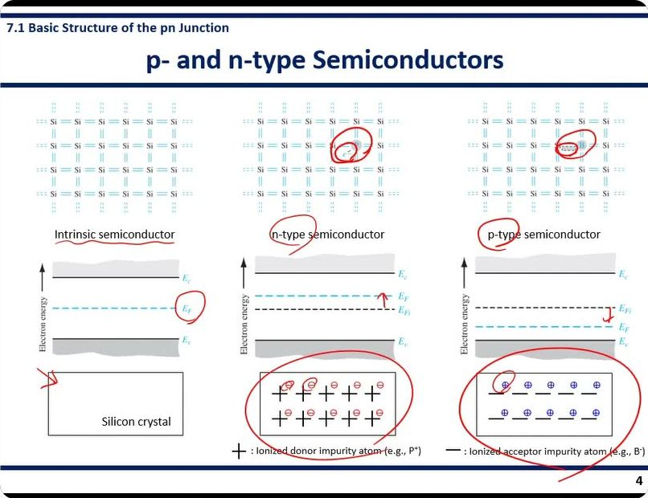
P 옆의 e⁻ 와 B 옆의 빈 결합에 각각
동그라미 — "도핑 원자가 무엇을 하나 더/덜 가져오는가"가 이 쪽의 핵심이라는 표시다. n형 밴드에는 E
F 옆에
↑, p형에는
↓ 를 그려 E
Fi 기준으로 어느 쪽으로 움직였는지를 보였다. 아래 이온 상자 두 개를 크게 감싸고, n형 상자에서는
＋ 옆 ⊖ 한 쌍, p형에서는
— 옆 ⊕ 한 쌍에 작은 동그라미를 쳤다. "이온과 캐리어가 한 쌍"이라는 기호 규칙을 짚은 것이다. 진성 쪽 "Intrinsic semiconductor" 밑줄, E
F 동그라미.
강의 ①19:15 "Intrinsic semiconductors become the n-type semiconductor when we employ a group 5 element such as phosphorus, and … becomes a p-type semiconductor when we employ a group 3 element such as boron."
강의 ①20:09 "For intrinsic semiconductors, the Fermi energy level is located around the middle of the bandgap, but the Fermi level of the n-type semiconductor is located above the intrinsic Fermi level. And the Fermi level of the p-type … is located below."
강의 ①20:50 "There are many number of free electrons donated by donor impurity atoms in the case of n-type semiconductor. And there are a large number of holes in the p-type semiconductors because of the acceptor impurity atoms."
정리 큰 기호(＋, —) = 박힌 이온, 작은 원 기호(⊖, ⊕) = 움직이는 캐리어. 다음 쪽부터 경계 근처에서 작은 원만 사라지고 큰 기호만 남는 그림이 나온다.
5쪽pn Junction — 붙이면 일어나는 일 (그림)
neutral · p-type semiconductor ＋ neutral · n-type semiconductor → pn junction
p형과 n형은 따로 있을 때 각각 중성(neutral)이다. 정공(⊕)의 + 는 억셉터 이온(—)의 − 와, 전자(⊖)의 − 는 도너 이온(＋)의 + 와 정확히 상쇄된다.
이 둘을 맞붙이면 pn 접합이다. 붙인 순간은 아직 아무 일도 없다.
→ Diffusion of electrons and holes
확산(diffusion) = 진한 곳에서 옅은 곳으로 저절로 퍼지는 것. 향수 뚜껑을 열면 방 안으로 퍼지는 것과 같다.
p 쪽엔 정공이 많고 n 쪽엔 적다. 그래서 정공(⊕)은 p → n 으로(파란 화살표), 전자(⊖)는 n → p 로(빨간 화살표) 넘어간다.
→ Generation of depletion region (space charge region) · E-field ←
넘어간 캐리어는 반대편의 다수 캐리어와 만나 재결합해 사라진다. 그래서 경계 근처에는 캐리어가 빠지고 박힌 이온만 남는다(회색 영역).
p 쪽엔 — 이온, n 쪽엔 ＋ 이온이 남는다. 이 둘 사이에 전기장이 생기고, 방향은 + 에서 − 로, 즉 n → p (왼쪽 ←) 이다.
이 영역이 공핍 영역(depletion region) = 공간 전하 영역(space charge region)이다.
→ Equilibrium condition
전기장은 정공을 왼쪽(p 쪽)으로, 전자를 오른쪽(n 쪽)으로 되밀어 확산을 막는다.
확산이 진행될수록 이온이 더 드러나 전기장이 세진다. 결국 두 힘이 같아지면 더 변하지 않는다. 이것이 열평형(equilibrium) 상태다.
Diffusion force = Force by the electric field
평형 조건 한 줄이다. 확산하려는 힘 = 전기장이 되미는 힘.
수도꼭지와 배수구가 같은 속도로 열린 욕조를 떠올리면 된다. 물은 계속 오가도 수위는 그대로다. 마찬가지로 평형에서도 캐리어 이동이 0 이 된 것이 아니라 두 흐름이 상쇄된 것이다.
판서 ①21:20~25:20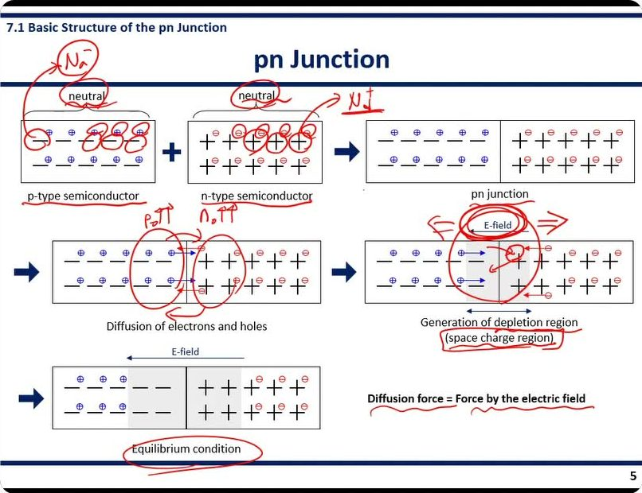
p형 상자의 — 들을 동그라미로 묶고
Na⁻, n형의 ＋ 들을 묶고
Nd⁺ 라고 붙였다. 큰 기호가 곧 도핑 농도 N
a, N
d 라는 연결이다(8쪽 식의 ρ = −eN
a, +eN
d 로 이어진다). 두 "neutral" 에 동그라미. 확산 그림의 경계 양옆을 크게 감싸고
p₀↑↑,
n₀↑↑ — "농도 차가 크니 넘어간다". 공핍 그림에서는 E-field 를 겹동그라미로 감싸고 왼쪽에
F ←, 오른쪽에
⇒ 를 그려 두 힘이 맞서는 방향을 보였고, 넘어온 ⊖ 를 되미는 화살표를 덧그렸다. "Equilibrium condition" 동그라미, 마지막 문장 두 부분에 각각 물결 밑줄.
강의 ①21:37 "Don't forget these semiconductors are neutral, because a charge by the electron or hole is balanced with the charge by the ionized impurity atoms. … So these n-type and p-type semiconductor remain neutral. So this is really important."
강의 ①23:02 "When there is a density gradient, there is always diffusion process going on, as we learned in chapter 5."
강의 ①24:07 "This region is also called as the space charge region, because charge by the ionized impurity atoms is appeared in this region. … only ionized impurity atoms are remained in this region."
강의 ①24:43 "This electric field will generate a force in the direction that disrupts the diffusion process. … Diffusion will continue until the diffusion force is balanced with the force generated by the electric field. Then the equilibrium condition is reached."
★ 강조 — "각각은 중성이다 … this is really important" 라고 말로 강조했고, 판서에서도 두 "neutral" 에 동그라미를 쳤다. 공핍 영역에 전하가 "생긴" 것이 아니라 원래 상쇄돼 있던 이온 전하가 캐리어가 빠지면서 드러난 것이라는 점을 잡으라는 뜻이다. 또 Diffusion force = E-field force 문장에 밑줄 — 열평형의 정의로 그대로 쓸 수 있다.
6쪽pn Junction — 다수 캐리어 확산과 공핍 영역 (글)
Diffusion of majority carriers
다수 캐리어(majority carrier) = 그 반도체에 많은 쪽 캐리어. 확산으로 넘어가는 것은 각 영역의 다수 캐리어다.
p-type: high hole concentration · majority carrier: holes · minority carrier: electrons
p형은 정공 농도가 높다. 다수 캐리어 = 정공, 소수 캐리어 = 전자.
n-type: high electron concentration · majority carrier: electrons · minority carrier: holes
n형은 전자 농도가 높다. 다수 캐리어 = 전자, 소수 캐리어 = 정공.
소수 캐리어(minority carrier) = 적은 쪽 캐리어. 2쪽에서 본 대로 nᵢ²/(도핑 농도) 만큼밖에 없다.
왼쪽 위 그림 — p 블록과 n 블록이 맞닿은 면이 야금학적 접합(metallurgical junction), 즉 물질이 실제로 바뀌는 경계면이다. 오른쪽 그래프는 x = 0 을 경계로 왼쪽은 Na, 오른쪽은 Nd 로 농도가 계단처럼 뚝 바뀌는 모양이다(이런 접합을 계단 접합, abrupt junction 이라 한다). 정공 확산은 → 방향, 전자 확산은 ← 방향.
Generation of the depletion region (space charge region)
공핍 영역이 생기는 과정을 글로 정리한 부분이다.
Diffusion of holes (or electrons) leave negatively charged acceptor atoms (or positively charged donor atoms)
정공이 떠나면 그 자리에 음전하 억셉터 이온이, 전자가 떠나면 양전하 도너 이온이 남는다.
그래서 아래 그림에서 공핍 영역의 p 쪽은 "Na negative charge", n 쪽은 "Nd positive charge" 다.
Electric field generation within the depletion region
남은 양·음 이온 사이에 전기장이 생긴다. 방향은 + (n 쪽) 에서 − (p 쪽) 으로, 그림의 E-field ← 와 같다.
In thermal equilibrium, the diffusion force and E-field force balance each other: diffusion process stops
열평형(thermal equilibrium) = 외부 전압·빛 없이 온도만 일정한 상태.
이때 확산력과 전기장 힘이 맞아떨어져 확산이 멈춘다(알짜 이동이 0).
No charge carrier within the depletion region (they are recombined or swept out by the E-field)
공핍 영역 안에는 캐리어가 없다. 들어온 캐리어는 ① 재결합해 사라지거나 ② 전기장에 쓸려 나간다(swept out).
이 "캐리어 0" 가정이 8쪽에서 공핍 영역 전하를 이온 전하만으로 쓰는 근거가 된다.
아래 그림 — 공핍 영역(하늘색) 안의 힘 네 개다. 바깥 경계에서 "Diffusion force on holes" 는 → (p 에서 n 으로 밀어 넣음), "Diffusion force on electrons" 는 ← . 안쪽에서 "E-field force on holes" 는 ← , "E-field force on electrons" 는 → . 캐리어마다 확산력과 전기장 힘이 정반대라서 상쇄된다.
판서 ①25:20~27:32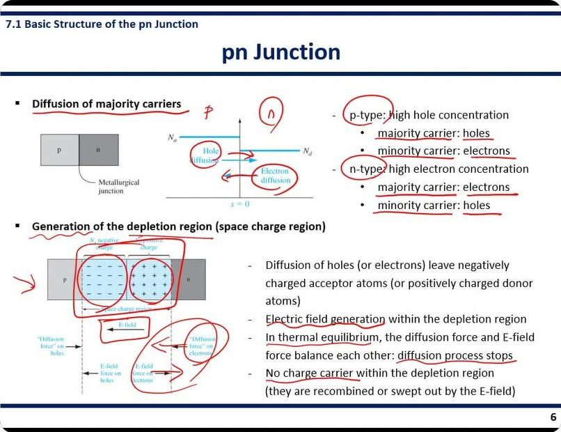
오른쪽 글의
majority / minority 와 holes / electrons 에 빠짐없이 밑줄. 그래프에
p,
(n) 을 써 넣고 Hole diffusion, Electron diffusion 에 동그라미와 화살표. 아래 그림에서는 — 영역과 ＋ 영역을 각각 크게 감싸고, "E-field", "Diffusion force on electrons" 를 동그라미로 묶은 뒤 두 화살표를 이어
"이 둘이 서로 반대"임을 표시했다. 오른쪽 문장들은 "Electric field generation", "In thermal equilibrium", "diffusion process stops", "No charge carrier" 에 밑줄.
강의 ①25:38 "For the p-type semiconductors majority carrier is hole and minority carrier is electron, and for n-type semiconductor majority carrier is electron and minority carrier is hole. So hole will diffuse from the p-type side to the n-type side, and electron will diffuse from the n-type region to the p-type region."
강의 ①26:50 "The direction of the electron diffusion force is in this direction, but the force by the internal electric field is the opposite direction as the diffusion direction. So when these two forces are balanced out, then diffusion process does not happen anymore."
강의 ①27:22 "Inside the depletion region, no charge carrier exists, because they are recombined or swept out by the electric field as charge carriers enter this depletion region. That's why this is called as a depletion region."
정리 다수 캐리어 확산 → 이온 노출 → 전기장 생성 → 확산력과 전기장 힘 평형 → 공핍 영역 안 캐리어 0. 5쪽 그림의 글 버전이다.
7쪽Fermi Level Alignment
7.2 Zero Applied Bias — Fermi Level Alignment
7.2 는 외부 전압 0 일 때를 다룬다. 첫 쪽은 4장의 페르미 준위 정렬을 pn 접합에 적용한다.
neutral | Depletion region (E-field ←) | neutral
접합은 세 구역이다. 양 끝은 중성 영역(이온과 캐리어가 상쇄, 전기장 0), 가운데는 공핍 영역(이온만, 전기장 있음).
Fermi level alignment: in thermal equilibrium, the Fermi energy level is constant throughout a system
열평형에서는 EF 가 시스템 전체에서 한 높이다.
EF 가 다른 곳이 있으면 높은 쪽 전자가 낮은 쪽으로 흘러 전류가 생긴다. 평형은 전류가 없는 상태이므로 EF 가 평평해야 한다.
아래 밴드 그림 — p형은 빨간 EF 가 Ev 가까이, n형은 Ec 가까이 있다. 붙인 뒤(오른쪽)에는 빨간 EF 가 한 줄로 가로질러 있고, 그 높이에 맞추느라 n형의 전도대·가전자대·EFi 가 통째로 아래로 내려가 있다. 가운데는 아직 비어 있다 — 어떻게 이어지는지 모르기 때문이다.
판서 ①27:52~29:44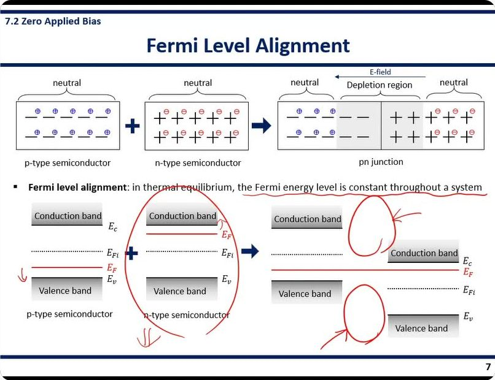
정의 문장 전체에 물결 밑줄. n형 밴드 그림을 통째로 감싸고 아래에
⇓⇓ — "n 쪽 밴드가 내려간다". p형 E
F 옆에 작은 ↓. 오른쪽 결합 그림에서
전도대와 가전자대의 빈 가운데 두 곳에 각각 동그라미를 그리고 화살표를 붙였다. "여기를 모른다, 여기를 구하는 게 다음 쪽들이다"라는 표시다.
강의 ①28:13 "As we learned before in chapter 4, the Fermi level is constant [throughout the] entire system. So when we make the contact, the Fermi level has to be aligned throughout the system."
강의 ①29:05 "So the energy band of the n-type semiconductor should be shifted downwards to make the Fermi level constant."
강의 ①29:28 "What we need to know to draw a full diagram of the pn junction is the energy band structure in this depletion region. So let's find how this energy band looks like in this depletion region."
정리 양 끝은 EF 정렬만으로 그린다. 가운데(공핍 영역)는 전기장 → 전위 → 에너지 순서로 구해서 채운다(8 → 9 → 10쪽).
8쪽Electric Field Profile
*εs: the permittivity of the semiconductor. For silicon, εs = 11.7
유전율(permittivity) εs = 물질이 전기장을 얼마나 "누그러뜨리는가"를 나타내는 값. 클수록 같은 전하가 만드는 전기장이 약하다.
11.7 은 정확히는 상대 유전율(진공의 몇 배인가)이다. 계산에 넣을 때는 εs = 11.7 × 8.85×10⁻¹⁴ F/cm ≈ 1.04×10⁻¹² F/cm 를 쓴다.
Electric field by the space charges · Poisson equation dE(x)/dx = ρ(x)/εs
포아송 방정식이다. ① E(x) 는 위치 x 에서의 전기장, ρ(x) 는 그 자리의 전하밀도(부피당 전하). ② 식이 하는 말: "전기장의 기울기 = 그 자리 전하 ÷ 유전율". ③ 전하가 있는 곳을 지날 때마다 전기장이 그만큼 바뀐다는 뜻이다. 전하가 없으면(ρ = 0) 전기장은 변하지 않는다.
그래서 전하 분포를 알면 적분 한 번으로 전기장을 얻는다.
ρ(x) = −eNa (−xp < x < 0)
= +eNd (0 < x < xn)
공핍 영역의 전하밀도다. e 는 전자 하나의 전하량 1.6×10⁻¹⁹ C.
p 쪽 공핍 영역(폭 xp)에는 음이온만 Na 개씩 있으므로 −eNa. n 쪽(폭 xn)에는 양이온 Nd 개씩이므로 +eNd.
캐리어가 없다는 6쪽 가정 덕에 도핑 농도가 곧 전하밀도가 된다. 왼쪽 그래프가 이 모양 — 아래로 −eNa, 위로 +eNd 인 직사각형 두 개다.
In the p-type region, E(x) = ∫ρ(x)/εs dx = −∫eNa/εs dx = −(eNa/εs)x + C₁
∫ 는 "잘게 쪼개 전부 더하기"다. 상수를 적분하면 x 에 비례하는 직선이 된다.
p 쪽 전기장은 기울기 −eNa/εs 인 직선이다. C₁ 은 적분상수로, 경계 조건을 넣어 정한다.
E-field is zero in the neutral p-region (−xp < x) and E-field is continuous because there are no surface charge densities
경계 조건 두 개다. 뒤에서 상수를 지우는 근거라서 하나씩 읽는다.
① 중성 영역에서는 E = 0. 전하가 상쇄돼 있으니 전기장이 없다. (원문의 부등호는 x < −xp 쪽을 가리키려던 것이다.)
② E 는 끊기지 않는다(연속). 두께 0 인 면에 전하가 몰려 있는 경우(표면 전하)만 전기장이 뚝 끊기는데, 여기에는 그런 면이 없다.
①+②: 공핍 영역 왼쪽 끝 x = −xp 에서 E = 0.
E(−xp) = −(eNa/εs)(−xp) + C₁ = 0 → C₁ = −eNaxp/εs → E(x) = −(eNa/εs)(x + xp)
x = −xp 를 넣고 0 으로 놓아 C₁ 을 구했다.
결과식은 x = −xp 에서 0, x 가 커질수록 음수로 커진다. 마이너스는 전기장이 −x 방향(n → p, 왼쪽)을 향한다는 뜻이고, 그림의 E-field ← 와 맞다.
In the n-type region, E(x) = ∫eNd/εs dx = (eNd/εs)x + C₂ = −(eNd/εs)(xn − x)
n 쪽도 같은 방법이다. 이번 경계는 x = xn 에서 E = 0.
결과식은 x = xn 에서 0 이고 접합 쪽(x → 0)으로 갈수록 음수로 커진다. 기울기는 +eNd/εs 이다.
E-field is also continuous at the junction, −(eNa/εs)xp = −(eNd/εs)xn → Naxp = Ndxn
x = 0 에서 두 식이 같아야 한다(연속 조건 ②). p 식에 x = 0, n 식에 x = 0 을 넣어 같다고 놓았다.
결과 Naxp = Ndxn 은 "p 쪽 음전하 총량 = n 쪽 양전하 총량"이다. 왼쪽 ρ 그래프에서 두 직사각형 넓이가 같다는 뜻이기도 하다.
그래서 도핑이 진한 쪽은 공핍 영역이 좁고, 옅은 쪽은 넓다. 15쪽(한쪽 접합)이 여기서 나온다.
오른쪽 아래 그래프 — 전기장 분포. 양 끝(−xp, +xn) 바깥은 0 이고, 안쪽으로 직선을 따라 내려가 x = 0 에서 가장 깊은 V 자가 된다. 그 바닥값이 Emax = −eNdxn/εs (= −eNaxp/εs). 크기로 말하면 전기장은 접합면에서 최대다.
판서 ①29:44~34:28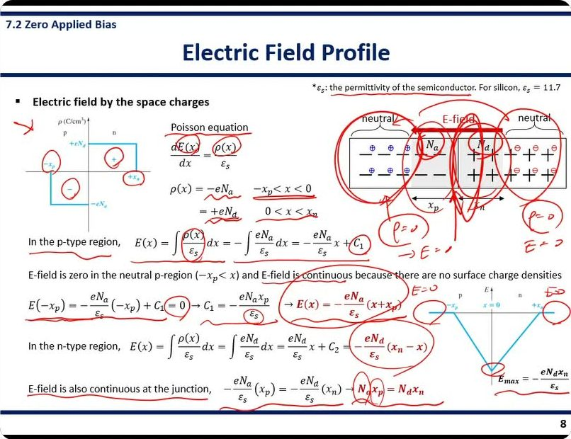
오른쪽 접합 그림의 양 끝 neutral 을 크게 감싸고 아래에
ρ = 0 → E = 0 을
왼쪽·오른쪽 두 번 썼다. 경계 조건 ①의 근거다. 전기장 그래프 양 끝에도
E = 0. N
a, N
d 를 동그라미로 묶어 공핍 영역 전하 = 도핑 농도임을 연결. ρ 그래프의 −x
p, +x
n, +, − 와 포아송 식의 E(x), ρ(x), ε
s 에 동그라미. C₁ = 0 대입식 밑줄, 결과 E(x) 두 개에 동그라미, 마지막 N
axp = N
dx
n 의 x
p 에 동그라미. 그래프 V 자 바닥에 동그라미 — E
max 위치.
강의 ①30:12 "Basically the charge density within the depletion region is the same as the doping concentration of each region."
강의 ①32:13 "Because there's no charge carrier outside of the depletion region, this is neutral and neutral … and no charge carrier means electric field equal to zero in this region. … And also electric field is continuous because there's no [surface] charge density."
강의 ①33:42 "[This equation] tells that the product of the doping concentration and the width of the depletion region is same in each region."
강의 ①34:16 "Outside the depletion region we have electric field equal to zero, and electric field is maximum at the junction with this amount of electric field."
★ 강조 — 슬라이드 빨간 글씨 세 개: E(x) = −(eNa/εs)(x + xp), E(x) = −(eNd/εs)(xn − x), Naxp = Ndxn. 판서로 경계 조건(중성 영역 ρ = 0 → E = 0, 연속)을 두 번 썼다. 유도 과정에서 "왜 C₁ 이 그 값인가"를 물으면 이 두 조건으로 답한다. 이 과목은 슬라이드 식·정의를 그대로 옮겨 묻는 경향이 있다.
9쪽Potential Difference
In the p-type region, φ(x) = −∫E(x)dx = ∫(eNa/εs)(x + xp)dx = (eNa/εs)(x²/2 + xpx) + C₁′
전위(potential) φ = 단위 전하가 가진 위치 에너지. 언덕의 "높이"와 같다.
전기장과 전위의 관계 E = −dφ/dx 를 뒤집으면 φ = −∫E dx. 전기장은 "언덕의 경사", 전위는 "높이"다. 경사를 더해 가면 높이가 나온다.
빨간 부분은 8쪽에서 구한 E(x) 를 그대로 넣은 것이다. 직선(E)을 적분하니 x² 이 나오는 포물선이 된다.
Set x = −xp as a reference point, then φ(−xp) = 0
기준점을 정한다. 전위는 "높이"라서 어디를 0 으로 잡을지 마음대로 정할 수 있다. 바다 높이를 0 m 로 잡는 것과 같다.
여기서는 p 쪽 공핍 영역 끝(오른쪽 그림 빨간 화살표 "Set the potential equal to zero")을 0 으로 잡았다.
φ(−xp) = (eNa/εs)(xp²/2 − xp²) + C₁′ = 0 → C₁′ = (eNa/2εs)xp²
x = −xp 를 넣으면 괄호 안이 xp²/2 − xp² = −xp²/2. 이것을 0 으로 놓아 C₁′ 을 정했다.
φ(x) = (eNa/2εs)(x + xp)² (−xp ≤ x ≤ 0)
정리하면 완전제곱 꼴이 된다. x = −xp 에서 0 이고 오른쪽으로 갈수록 위로 휘며 올라가는 포물선이다.
Similarly, in the n-type region, φ(x) = ∫(eNd/εs)(xn − x)dx = (eNd/εs)(xnx − x²/2) + C₂′
n 쪽도 E(x) 를 넣어 적분했다. 역시 포물선이다.
The potential is a continuous function, φ(0) = C₂′ = (eNa/2εs)xp²
이번 경계 조건은 전위가 x = 0 에서 끊기지 않는다는 것이다. 높이가 갑자기 뚝 끊기는 절벽은 없다.
n 식에 x = 0 을 넣으면 C₂′ 만 남는다. p 식에 x = 0 을 넣은 값 (eNa/2εs)xp² 과 같게 놓았다.
φ(x) = (eNd/εs)(xnx − x²/2) + (eNa/2εs)xp² (0 ≤ x ≤ xn)
n 쪽 전위. x = 0 에서 p 쪽 끝값을 이어받고, xn 까지 올라가다 평평해지는 포물선이다(x = xn 에서 기울기 = 전기장 = 0).
The potential difference (built in potential, Vbi)
Vbi = |φ(xn) − φ(−xp)| = |φ(xn)| = (eNd/εs)(xn² − xn²/2) + (eNa/2εs)xp² = (e/2εs)(Ndxn² + Naxp²)
내부 전위(built-in potential) Vbi = 공핍 영역 양 끝의 전위 차. "접합이 스스로 만든 언덕 높이"다.
기준점이 0 이므로 φ(xn) 만 구하면 된다. 두 항은 각각 n 쪽 공핍 영역에서 오른 높이(eNdxn²/2εs)와 p 쪽에서 오른 높이(eNaxp²/2εs)다. 오른쪽 그래프의 두 화살표가 이 두 항이다.
오른쪽 그래프 — 세로축 φ, 가로축 x. −xp 왼쪽은 0 으로 평평, −xp 부터 아래로 볼록한 포물선으로 올라가 x = 0 에서 (eNa/2εs)xp², 다시 위로 볼록한 포물선으로 올라가 xn 에서 Vbi 에 닿은 뒤 평평. 포물선 두 개를 이은 S 자다. 3쪽에서 물었던 "직선인가 계단인가"의 답이다.
판서 ①34:40~39:40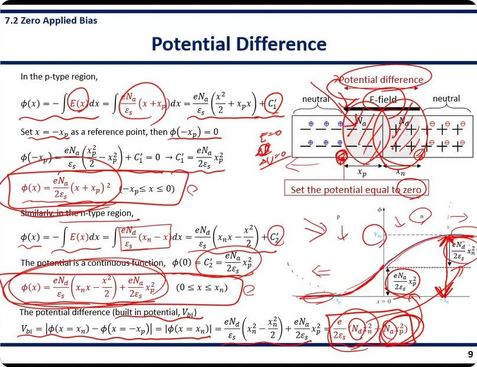
왼쪽 여백에
E = 0 · ΔV = 0 (판독 일부 흐림) — 중성 영역은 전기장이 0 이라 전위가 변하지 않는다는 메모. 위 식의 E(x), 넣은 빨간 식, C₁′ 에 동그라미. 결과 φ(x) 두 개를
큰 타원으로 감쌌다. "Similarly, in the n-type region" 은 줄을 그어 지나갔다. 오른쪽 그림은 공핍 영역을 빗금으로 채우고 "Potential difference" 를 감싼 뒤 기준점(왼쪽 끝)에 동그라미. 그래프 위에 → ↓ 화살표로
포물선 두 조각이 어디서 어디로 이어지는지를 덧그렸고, 두 높이 화살표를 따라 그렸다. 마지막 V
bi 결과식 (e/2ε
s)(N
dx
n² + N
ax
p²) 에 큰 동그라미.
강의 ①34:54 "To find the potential difference across the depletion region, we set the potential at this position as a reference potential. So the potential at this position has a potential equal to zero."
강의 ①37:36 "So this is actually basically a parabolic graph. … And outside of the depletion region the potential equal to zero, because we set this potential as a reference potential. And also outside of the depletion region electric field equal to zero, so there's no potential change."
강의 ①39:06 "This equation becomes like this, meaning that potential difference across the depletion region depends on the doping concentration of each region. So this part is a potential difference across the depletion region in the n region, and this part is the potential difference across the depletion region in the p region."
★ 강조 — 슬라이드 빨간 글씨: 두 φ(x) 결과식과 Vbi = (e/2εs)(Ndxn² + Naxp²), 그리고 "Set the potential equal to zero" 상자. 판서도 이 셋에 큰 동그라미를 쳤다. 기준점·연속 조건으로 상수를 정하는 순서와 두 항이 각 영역의 전위차라는 해석을 같이 챙긴다.
10쪽Energy Band Diagram of a pn Junction
p-type + n-type → (결합 밴드 그림)
7쪽에서 비워 두었던 가운데를 드디어 채운 그림이다. 왼쪽(p)의 밴드가 높고 오른쪽(n)의 밴드가 낮으며, 그 사이를 S 자 곡선으로 이었다. EF(빨간 선)는 끝까지 한 줄이다.
Potential profile (φ: −xp 에서 0, xn 에서 Vbi)
9쪽에서 구한 전위 그래프다. 왼쪽에서 오른쪽으로 S 자로 올라간다.
Energy profile E = −eφ
에너지 밴드 그림은 전자의 위치 에너지를 그린 것이다. 전위 φ 에 전자의 전하 −e 를 곱하면 전자의 에너지가 된다.
마이너스를 곱하니 그래프가 위아래로 뒤집혀 왼쪽이 높고 오른쪽이 낮은 S 자가 된다. 이 모양을 전도대·가전자대·EFi 에 그대로 대면 위 그림이 완성된다.
주의: 여기서 E 는 전기장이 아니라 에너지(Energy)다. 같은 글자를 쓰니 헷갈리지 않게 한다.
p: Ec, EFi, EF, Ev / n: Ec, EF, EFi, Ev
밴드 안 순서가 양쪽에서 다르다. p 쪽은 EF 가 EFi 아래, n 쪽은 EF 가 EFi 위. 4쪽의 결과 그대로다.
전자 입장에서 n → p 로 가려면 오르막, 정공 입장에서 p → n 으로 가려면 (정공은 아래로 갈수록 에너지가 높으므로) 역시 장벽이 있다. 이 언덕이 확산을 막고 있다.
판서 ①39:48~42:52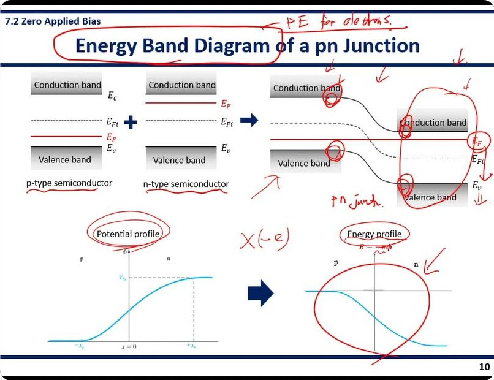
제목을 감싸고 옆에
PE for electrons. — "에너지 밴드 그림 = 전자의 위치 에너지(Potential Energy)"라는 정의를 제목에 붙였다. 위에서 아래로 ↓ 화살표 여러 개(밴드가 내려간다). p 쪽 전도대·가전자대 끝(곡선이 시작되는 모서리)에 작은 동그라미, n 쪽 밴드 전체를 크게 감싸고 E
F 동그라미, E
v 옆 ⇓, 아래에
pn junct.. 두 그래프 사이 화살표 위에
X(−e) —
"−e 를 곱한다". Potential profile, Energy profile 에 동그라미, 뒤집힌 S 자 그래프 전체를 크게 감쌈.
강의 ①40:39 "We know how the energy band diagram of the pn junction [looks] in the p-type region and n region. But we did not know how to connect those two bands together within this depletion region. So we are going to use the potential profile across the depletion region we just obtained to finalize this drawing."
강의 ①41:07 "Since the energy band diagram basically describes the potential energy for the electron, in order to find the potential energy profile for the electron from the potential profile, we need to multiply the elementary charge of the electron, which is minus e."
강의 ①42:20 "But now we know how to connect those energy bands, because the energy profile within the depletion region has to follow the same shape as this one. So if we connect all the lines together using this shape, then we will have this kind of graph. This is the final drawing of the pn junction energy band diagram."
★ 강조 — 슬라이드 빨간 글씨 E = −eφ, 판서 "PE for electrons", "X(−e)". 밴드 그림을 그리라는 문제에서 "왜 전위 그래프를 뒤집어 대는가"를 이 한 줄로 설명한다. 2쪽에서 "이 장의 첫 번째 할 일"이라 했던 그림이 여기서 완성된다.
11쪽Built-In Potential
Vbi = |φFn| + |φFp|
Vbi 를 이번에는 밴드 그림에서 읽는다.
eφFn = n 쪽에서 EF 와 EFi 의 간격, eφFp = p 쪽에서의 간격이다. 왼쪽 그림의 파란 화살표 두 개다.
EFi 가 p 쪽에서 n 쪽까지 내려간 총 높이(eVbi)는 이 두 간격을 더한 것과 같다. EF 가 한 줄이기 때문이다.
In the n-type region, n₀ = nᵢ exp[(EF − EFi)/kT] = nᵢ exp[−e(φFn)/kT] → (n₀ ≈ Nd) → φFn = −(kT/e) ln(Nd/nᵢ)
4장의 전자 농도 식이다. ① k = 볼츠만 상수, T = 절대온도, kT = 열에너지 크기. ② 식이 하는 말: EF 가 EFi 보다 kT 만큼 올라갈 때마다 전자가 e 배(약 2.7 배)씩 많아진다. ③ 지수 꼴인 이유는 에너지 분포가 볼츠만 분포를 따르기 때문이다.
EF − EFi 를 −eφFn 으로 바꿔 쓰고, 빨간 상자 n₀ ≈ Nd(2쪽 근사)를 넣어 ln 으로 풀었다. φFn 은 음수다(n 쪽 EF 가 위).
In the p-type region, p₀ = nᵢ exp[−(EF − EFi)/kT] = nᵢ exp[+e(φFp)/kT] → (p₀ ≈ Na) → φFp = +(kT/e) ln(Na/nᵢ)
p 쪽은 정공 농도 식으로 같은 일을 한다. 빨간 상자 p₀ ≈ Na. φFp 는 양수다.
Vbi = (kT/e) ln(Nd/nᵢ) + (kT/e) ln(Na/nᵢ) = (kT/e) ln(NdNa/nᵢ²) = Vt ln(NdNa/nᵢ²)
절댓값을 더하고 ln A + ln B = ln AB 로 합쳤다.
결과가 이 장에서 가장 많이 쓰는 식이다. 도핑 농도 두 개와 온도만 알면 Vbi 가 나온다. 농도를 10 배 올려도 ln 때문에 Vbi 는 Vt·ln10 ≈ 0.06 V 밖에 안 오른다.
*Vt = kT/e: the thermal voltage, 0.0259 V at RT (300K)
열전압(thermal voltage) Vt = 열에너지 kT 를 전압 단위로 바꾼 값. 상온(RT, 300 K)에서 0.0259 V(= 25.9 mV).
[Example 7.1] Calculate the built-in potential barrier in a pn junction. Si pn junction at T = 300K, Na = 2×10¹⁷ cm⁻³, Nd = 10¹⁵ cm⁻³. nᵢ = 1.5×10¹⁰ cm⁻³.
조건 읽기: 실리콘, 상온(Vt = 0.0259 V), p 쪽 2×10¹⁷, n 쪽 10¹⁵, nᵢ = 1.5×10¹⁰.
위 식에 그대로 넣는 문제다. 풀이는 아래 판서.
판서 ①42:52~48:04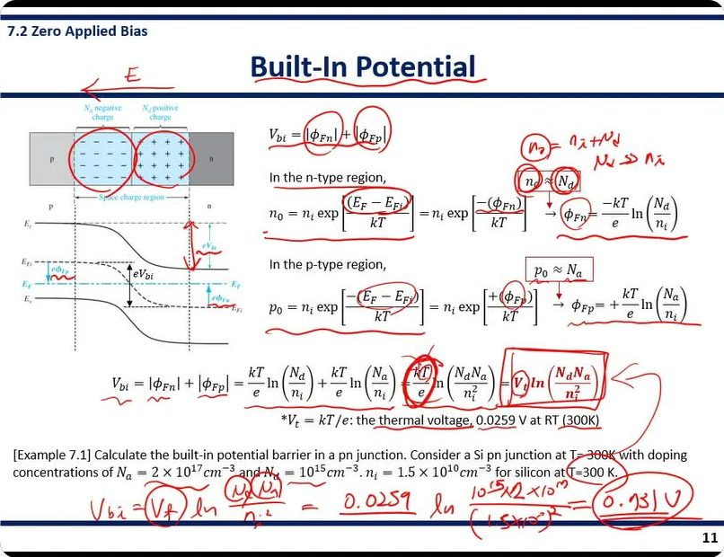
제목 위에
E ←, 공핍 영역 −, + 반쪽을 각각 동그라미. 밴드 그림의 eV
bi 화살표를 빨갛게 덧그림. 식의 φ
Fn, φ
Fp, E
F − E
Fi 에 동그라미. 빨간 상자 n₀ ≈ N
d 옆에
n₀ = nᵢ + Nd, Nd ≫ nᵢ — 근사의 근거를 적었다(2쪽 내용). 최종식 kT/e 에 겹동그라미, V
t ln(N
dN
a/nᵢ²) 를
네모로 감싸고 화살표. "thermal voltage, 0.0259 V" 밑줄.
예제 풀이:
Vbi = Vt ln(NdNa/nᵢ²) = 0.0259 ln[10¹⁵ × 2×10¹⁷ / (1.5×10¹⁰)²] = 0.731 V (답에 겹동그라미).
검산 — 판서와 강의(①47:42 "you have 0.731 volt")는 0.731 V 다. 그러나 직접 계산하면 NdNa/nᵢ² = 2×10³²/2.25×10²⁰ = 8.89×10¹¹, ln = 27.51, × 0.0259 = 0.713 V 다. 교재(Neamen) Example 7.1 의 답도 0.713 V 다. 숫자 두 자리가 뒤바뀐 것으로 보인다. 시험 답안에는 0.713 V 를 쓴다.
강의 ①43:32 "And this is basically the potential barrier for electron and hole in the pn junction."
강의 ①44:44 "n₀ equal to nᵢ plus Nd, but Nd is much greater than nᵢ, so we can approximate n₀ to Nd."
강의 ①46:09 "At room temperature, 300 kelvin, this value, the thermal voltage becomes 0.0259 volt, which is 25.9 milli[volt]. So you will encounter this number very often, so it's good to memorize this number."
강의 ①47:00 "All you need to know to find the built-in potential is the doping concentrations and temperature. So you just need to put all the numbers into this equation."
강의 ①47:57 "And remember that this built-in potential is not very high. So sometimes we can neglect this built-in potential. So you will see the situation later on."
자료에 없음 ①47:57 Vbi 는 크지 않아서 나중에 무시할 때가 있다. 1 V 가 안 되므로, 13쪽 이후 역방향 전압 VR 이 수~수십 V 로 크면 Vbi + VR ≈ VR 로 버린다는 예고다.
★ 시험 포인트 — ① Vbi = Vt ln(NdNa/nᵢ²) — 슬라이드 빨간 글씨, 판서 네모. ② Vt = 0.0259 V @ 300 K 는 외워라("good to memorize")고 말했다. ③ φFn, φFp 유도의 빨간 상자 n₀ ≈ Nd, p₀ ≈ Na. 예제 답은 0.713 V(판서 0.731 은 오기).
12쪽Space Charge Width
Naxp = Ndxn → xp = (Nd/Na)xn
공간 전하 폭(space charge width) W = 공핍 영역 전체 폭 = xp + xn. 이것을 도핑 농도와 Vbi 로 나타내는 쪽이다.
출발은 8쪽의 전하 중성 조건이다. xp 를 xn 으로 바꿔 써서 미지수를 하나로 줄였다.
Vbi = (e/2εs)(Ndxn² + Naxp²) = (e/2εs)(Ndxn² + Na((Nd/Na)xn)²)
9쪽 Vbi 식에 방금 구한 xp 를 넣었다. 이제 식에 xn 하나만 남는다.
Vbi = (e/2εs)xn²Nd(1 + Nd/Na) → xn² = (2εsVbi/e)(Na/Nd)(1/(Na + Nd))
Ndxn² 로 묶어 내고 xn² 에 대해 풀었다. 1 + Nd/Na = (Na + Nd)/Na 를 쓰면 오른쪽 꼴이 된다.
xn = {(2εsVbi/e)(Na/Nd)(1/(Na + Nd))}1/2 Similarly, xp = {(2εsVbi/e)(Nd/Na)(1/(Na + Nd))}1/2
제곱근을 씌워 xn. xp 는 같은 꼴에서 Na/Nd 만 뒤집으면 된다.
보면 xn 에는 Na/Nd 가 들어 있다. 상대편 농도가 진할수록 내 쪽 공핍 영역이 넓다.
W = xp + xn = {(2εsVbi/e)(1/(Na + Nd))}1/2{(Na/Nd)1/2 + (Nd/Na)1/2} = {(2εsVbi/e)((Na + Nd)/(NaNd))}1/2
두 폭을 더하고 공통 인수를 묶었다. 둘째 중괄호를 통분하면 (Na + Nd)/√(NaNd) 이고, 정리하면 빨간 결과식이 된다.
① W 는 √Vbi 에 비례한다. ② (Na + Nd)/(NaNd) = 1/Na + 1/Nd 이므로 도핑이 옅을수록 W 가 넓다.
[Example 7.1 → 영상 슬라이드에서는 Example 7.2] Calculate the space charge width and electric field in a pn junction for zero bias. T = 300 K, Na = 10¹⁶ cm⁻³, Nd = 10¹⁵ cm⁻³.
PDF 에는 11쪽과 같은 "Example 7.1" 로 찍혀 있지만, 강의 영상의 슬라이드는 "Example 7.2" 다. 번호 오기다.
순서: ① Vbi → ② W → ③ xn(또는 xp) → ④ Emax.
판서 ①48:10~52:36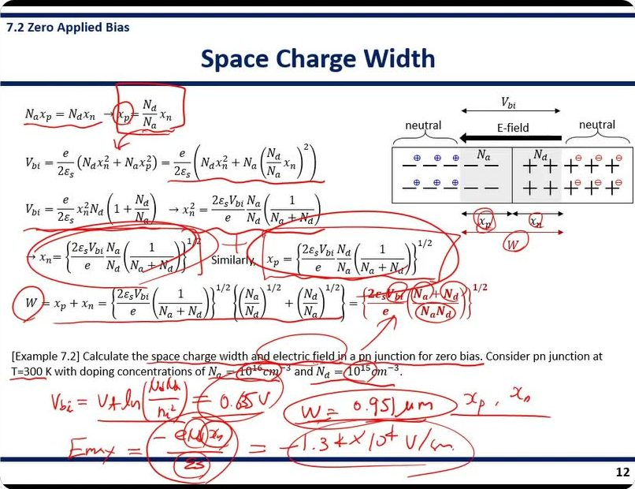
첫 줄 x
p = (N
d/N
a)x
n 을 네모로 감싸고
화살표를 아래 Vbi 식의 대입 자리로 끌어내렸다 — "이걸 여기 넣는다". x
n, x
p 결과식을 각각 큰 타원으로, W 에 동그라미, 최종식 분자 2ε
sV
bi 와 (N
a+N
d)/(N
aN
d) 에 동그라미. 그림의 x
p, x
n, W 에도 동그라미.
예제 풀이:
Vbi = Vt ln(NdNa/nᵢ²) = 0.635 V →
W = 0.951 μm (타원) →
xp, xn →
Emax = −eNdxn/εs = −1.34×10⁴ V/cm (큰 타원). E
max 식의 N
d, x
n, ε
s 에 각각 동그라미.
검산 — Vbi = 0.0259 × ln(10³¹/2.25×10²⁰) = 0.0259 × 24.52 = 0.635 V ✓. W = √[2 × 1.04×10⁻¹² × 0.635 / 1.6×10⁻¹⁹ × (1.1×10¹⁶/10³¹)] = 9.51×10⁻⁵ cm = 0.951 μm ✓. xn = W × Na/(Na+Nd) = 0.951 × 10/11 = 0.865 μm, xp = 0.0865 μm (판서에는 기호만 있고 값은 적지 않았다). Emax = 1.6×10⁻¹⁹ × 10¹⁵ × 8.65×10⁻⁵ / 1.04×10⁻¹² ≈ 1.34×10⁴ V/cm ✓ (방향 때문에 부호 −).
강의 ①48:34 "To find the expression for the space charge width, we start from the charge neutrality equation."
강의 ①50:00 "When you know the doping concentration of each region and temperature, you are able to find built-in potential, and using the built-in potential and the doping concentration of each region, then you can find the space charge width."
강의 ①50:57 "You need to find the built-in potential first. … then you will find built-in potential at 0.65 — sorry — [0.63]5 volt."
강의 ①51:41 "You can also find the individual component of the space charge width, xp and xn, using this equation. Then by adding those two values, you can also obtain this W."
강의 ①52:22 "Then you can find the electric field equal to 1.34 × 10⁴ volts per centimeter, which is pretty high."
자료에 없음 ①52:22 1.34×10⁴ V/cm 는 "꽤 높은" 전기장이라는 감각. 전압은 0.6 V 남짓이지만 1 μm 도 안 되는 폭에 걸리니 전기장은 크다. 16쪽 항복이 이 큰 전기장에서 시작된다.
★ 시험 포인트 — 빨간 결과식 W = {(2εsVbi/e)((Na + Nd)/(NaNd))}1/2. 판서로 유도 첫 단계(전하 중성 → xp 대입)에 화살표를 그었다. 계산 문제는 Vbi → W → xn → Emax 순서 그대로. 숫자: 0.635 V, 0.951 μm, 1.34×10⁴ V/cm.
13쪽Reverse Bias Condition
7.3 Reverse Applied Bias · Reverse bias: a positive voltage is applied to the n region with respect to the p region
역방향 바이어스 = p 를 기준으로 n 쪽에 + 전압을 거는 것. 그림처럼 VR 의 − 극을 p 에, + 극을 n 에 잇는다.
반대(p 에 +)는 순방향(forward)이고 다음 장에서 다룬다.
왼쪽 그림 — 걸어 준 전압이 만드는 전기장 Eapp(app = applied) 가 ← 방향이다. 원래 공핍 영역의 내부 전기장 E 도 ← 방향이다. 같은 방향이라 더해진다. 공핍 영역 폭 W 가 표시돼 있다.
Bias applied → no longer in an equilibrium condition → The Fermi energy level will no longer be constant through the system
전압을 걸면 더 이상 열평형이 아니다. 그래서 7쪽의 "EF 한 줄" 규칙이 깨진다.
오른쪽 밴드 그림에서 p 쪽 EFp 와 n 쪽 EFn 이 eVR 만큼 어긋나 있다. 각각을 준페르미 준위(quasi-Fermi level)라 부른다.
The total barrier (Vtotal) increases · Vtotal = |φFn| + |φFp| + VR Vtotal = Vbi + VR
n 쪽 밴드가 eVR 만큼 더 내려가 언덕이 높아진다. 전체 장벽 = 원래 언덕 Vbi + 걸어 준 VR.
언덕이 높아졌으니 확산으로 넘어갈 수 있는 캐리어가 거의 없다. 그래서 역방향에서 전류가 안 흐른다. 3쪽에서 던진 질문의 답이다.
Bias applied → additional electric field applied (Eapp) → The number of charges in the depletion region increases → The space charge width (W) increases
세 단계 인과다.
① 전기장이 커진다. ② 8쪽에서 전기장은 이온 전하가 만든 것이었다. 전기장이 커지려면 드러난 이온 전하가 더 많아야 한다. ③ 도핑 농도는 고정이므로 전하를 늘리는 방법은 공핍 영역을 넓히는 것뿐이다.
W = {(2εs(Vbi + VR)/e)((Na + Nd)/(NaNd))}1/2
12쪽 W 식에서 Vbi 를 Vbi + VR 로 바꾸기만 하면 된다. 언덕 높이가 그만큼 커졌기 때문이다.
W ∝ √(Vbi + VR). 전압을 4 배로 올리면 폭은 2 배.
Electric field increases · Emax = −eNdxn/εs = −eNaxp/εs
8쪽의 Emax 식 그대로다. xn, xp 가 넓어졌으니 Emax 도 커진다.
Emax = −{(2e(Vbi + VR)/εs)(NaNd/(Na + Nd))}1/2
xn 식(Vbi → Vbi + VR)을 넣어 정리한 꼴이다. Emax 도 √(Vbi + VR) 에 비례한다.
Emax = −2(Vbi + VR)/W
W 로 쓴 꼴이다. 8쪽의 전기장 그래프는 밑변 W, 높이 |Emax| 인 삼각형이고, 전위차는 그 넓이 = ½·W·|Emax| 다. 그래서 Vbi + VR = ½W|Emax| → 이 식이 나온다.
판서 ①52:48~56:32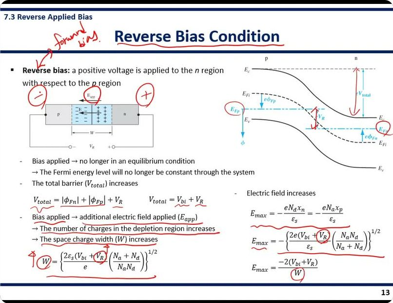
제목 왼쪽 위에
forward bias. 를 써서 화살표로 "Reverse bias" 에 연결 — 반대말을 함께 기억시키려는 표시다. 회로의 p 쪽에
⊖, n 쪽에
⊕ 를 크게. 밴드 그림의 E
Fp, E
Fn 에 동그라미, V
R 화살표·eV
total 화살표를 빨갛게 덧그림. V
total, V
bi + V
R 밑줄, 인과 세 줄 전부 밑줄. W 식 앞 W 에 동그라미와
↑, 식 속 V
R 동그라미. E
max 식 두 개에도 V
R, W 에 동그라미.
강의 ①53:20 "So the opposite situation is called a forward bias condition. It's the situation that we apply a positive voltage to the p region with respect to the n region. So we will consider the forward bias condition in the following chapter."
강의 ①54:18 "So we have two quasi-Fermi levels here. So these two quasi-Fermi energy levels have energy difference here due to the applied reverse bias. And because of this, we have increased potential barrier."
강의 ①55:20 "The increased electric field in the depletion region implies that the total number of charges in the depletion region also increases. So in order to increase the number of charges in the depletion region, the space charge width has to be increased."
자료에 없음 ①54:18 어긋난 두 EF 의 이름이 준페르미 준위(quasi-Fermi level)라는 것. 슬라이드에는 EFp, EFn 기호만 있다.
★ 시험 포인트 — 역방향에서 커지는 세 가지 Vtotal, W, Emax 와 그 식. 판서에서 VR 이 들어간 자리마다 동그라미를 쳤다. "Vbi 자리에 Vbi + VR" 이 이 쪽의 요령이다. 그리고 "전기장 ↑ → 전하 ↑ → W ↑" 인과 세 줄(밑줄)은 서술형으로 그대로 쓸 수 있다.
14쪽Junction Capacitance
두 그래프 — 왼쪽은 바이어스 없을 때의 전하밀도(8쪽과 같은 직사각형 두 개). 오른쪽은 역방향 VR 을 건 상태에서 dVR 만큼 더 올렸을 때다. 공핍 영역 양 끝이 dxp, dxn 만큼 바깥으로 넓어지면서, 왼쪽 끝에 −dQ′, 오른쪽 끝에 +dQ′ 의 얇은 띠(하늘색)가 새로 생긴다.
C′ = dQ′/dVR dQ′ = eNddxn = eNadxp
정전용량(capacitance) C = 전압을 올렸을 때 전하가 얼마나 더 쌓이는가. 축전기(전하 그릇)의 크기다.
pn 접합은 공핍 영역 양쪽에 + 전하와 − 전하가 떨어져 마주 보는 구조라서 축전기처럼 행동한다. 전압을 바꾸면 전하량이 바뀌기 때문에 미분 꼴 dQ′/dVR 로 정의한다(′ 는 단위 면적당).
dQ′ 는 새로 생긴 띠의 넓이다. 높이 eNd × 폭 dxn. 전하 중성 때문에 p 쪽 띠 넓이와 같다.
xn = {(2εs(Vbi + VR)/e)(Na/Nd)(1/(Na + Nd))}1/2
12쪽 xn 에서 Vbi 를 Vbi + VR 로 바꾼 것이다. 이 식을 VR 로 미분하면 dxn/dVR 가 나온다.
C′ = dQ′/dVR = eNd(dxn/dVR) = {eεsNaNd/(2(Vbi + VR)(Na + Nd))}1/2 = εs/W
xn 를 미분해 정리하면 가운데 꼴이 나오고, 오른쪽 상자의 W 식과 비교하면 놀랍게도 εs/W 로 깔끔해진다.
C′ ∝ 1/√(Vbi + VR). 역방향 전압을 올릴수록 용량이 줄어든다(W 가 넓어지니까).
(빨간 상자) W = {(2εs(Vbi + VR)/e)((Na + Nd)/(NaNd))}1/2
13쪽의 W 식이다. C′ = εs/W 를 확인할 때 이 식과 맞춰 본다.
판서 ①56:44~60:04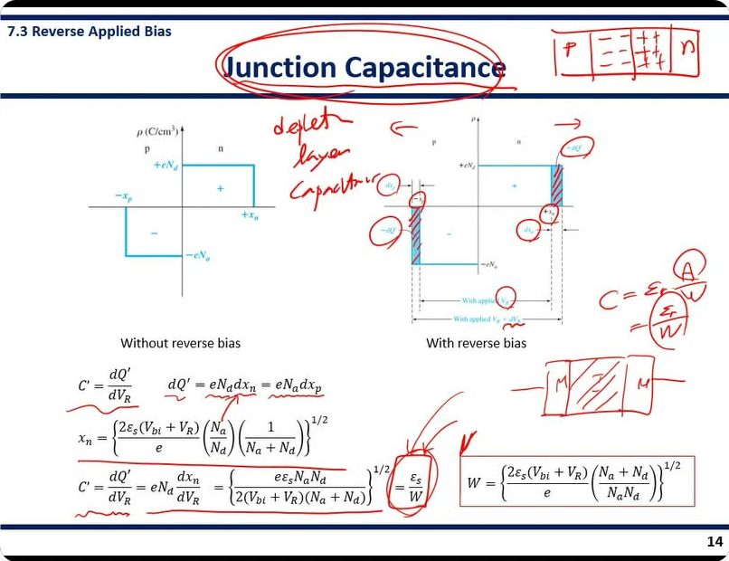
제목을 겹타원으로 감싸고 오른쪽 위에
p | − − | + + | n 블록 — 전하가 떨어져 마주 본다. 여백에
deplet. layer capacitor. 오른쪽 그래프의 −dQ′, +dQ′ 띠에
빨간 빗금을 치고 dx
p, −x
p, +x
n, dx
n 에 동그라미, 위에 ← → 화살표(양쪽으로 넓어짐). 오른쪽에
C = ε A/W = ε/W (A 동그라미) 와
M | 절연체(빗금) | M 그림 —
평행판 축전기와 같은 꼴임을 보였다. C′ 식 끝의 ε
s/W 에 동그라미, dQ′ 식 밑줄, 체크.
강의 ①56:44 "In the pn junction we have separation of charges in the depletion region. … we have negative charges due to the ionized acceptor atoms … positive charges due to the ionized donor atoms. So we have a separation of charges, that means we have a capacitance in the pn junction."
강의 ①58:22 "Here, dQ′ is the area in this graph. So we can write dQ′ as eNd times dxn, and this is also same as eNa times dxp according to the charge neutrality condition."
강의 ①59:19 "So this is basically the same expression for the capacitance per unit area of the parallel plate capacitor. So remember, for the parallel plate capacitor, metal and insulator, the capacitance … is basically ε A over W. And if you normalize it by the area, then it's going to be ε over W."
강의 ①59:54 "And this junction capacitance is also called as a depletion layer capacitance."
자료에 없음 ①59:19 평행판 축전기 비유. 금속–절연체–금속 축전기의 C = εA/W 를 면적으로 나누면 ε/W. pn 접합에서는 공핍 영역이 절연체, 양 끝의 중성 영역이 금속판 역할이다. 그리고 다른 이름 공핍층 용량(depletion layer capacitance).
★ 시험 포인트 — C′ = dQ′/dVR = εs/W. 판서로 εs/W 에 동그라미 + 평행판 그림을 따로 그렸다. "왜 εs/W 인가 → 평행판 축전기와 같은 꼴" 로 설명하고, VR ↑ → W ↑ → C′ ↓ 를 같이 쓴다.
15쪽One-Sided Junction
Na ≫ Nd: p⁺n junction
한쪽 접합(one-sided junction) = 한쪽 도핑이 다른 쪽보다 압도적으로 진한 접합.
p 쪽이 훨씬 진하면 p⁺n 접합이라 쓴다. ⁺ 는 "아주 진하게 도핑"했다는 표시다. 반대로 Nd ≫ Na 이면 n⁺p 접합.
W = {(2εs(Vbi + VR)/e)((Na + Nd)/(NaNd))}1/2 ≈ {2εs(Vbi + VR)/(eNd)}1/2
≈ 는 큰 것만 남긴 근사다. Na ≫ Nd 이면 (Na + Nd)/(NaNd) = 1/Nd + 1/Na 에서 1/Na 가 아주 작아 버린다. 남는 것은 1/Nd.
결과적으로 W 는 옅은 쪽 농도 Nd 만으로 결정된다.
xp ≪ xn → W ≈ xn : the entire depletion region is formed only in the low-doped region of the pn junction
8쪽 Naxp = Ndxn 을 떠올린다. Na 가 아주 크면 xp 는 아주 작아야 한다. 그래서 xp 는 무시되고 W ≈ xn.
즉 공핍 영역은 거의 전부 도핑이 옅은 쪽에 생긴다.
왼쪽 그래프 — 위는 전하밀도. p⁺ 쪽은 −eNa 까지 아주 깊지만 아주 얇은 막대, n 쪽은 +eNd 로 얕고 넓은 직사각형. 넓이는 같다. 아래는 전기장. 최대값이 x = 0 에서 거의 수직으로 떨어지고 n 쪽으로 길게 직선으로 돌아온다. 전기장이 사실상 n 쪽에만 있다.
e.g., power semiconductor device · Typical pn junction diode (Anode–p–n–Cathode) · One-sided pn junction used in power diode (Anode–p⁺–n⁻–n⁺–Cathode)
실제 쓰임이다. 보통 다이오드는 p 와 n 을 붙인 것이다.
전력용 다이오드(power diode)는 p⁺ 와 n⁺ 사이에 아주 옅은 n⁻ 층을 넣는다. p⁺n⁻ 한쪽 접합이라 공핍 영역이 n⁻ 층에 넓게 퍼진다.
공핍 영역이 넓으면 같은 전압에서 전기장이 약하다(13쪽 Emax = −2V/W). 그래서 높은 전압을 견딘다.
C′ = {eεsNd/(2(Vbi + VR))}1/2 → (1/C′)² = 2(Vbi + VR)/(eεsNd)
14쪽 C′ 에 같은 근사를 하면 Nd 만 남는다. 양변을 뒤집어 제곱하면 (1/C′)² 가 VR 에 대한 1차식(직선)이 된다.
오른쪽 아래 그래프 — 세로축 (1/C′)², 가로축 VR. 직선이고, 기울기 = 2/(eεsNd), 가로축과 만나는 점(점선 연장) = −Vbi. 실험에서 C 를 VR 별로 재서 이 그래프를 그리면 기울기로 Nd, 절편으로 Vbi 를 거꾸로 알아낼 수 있다(C–V 측정).
판서 ①60:09~65:52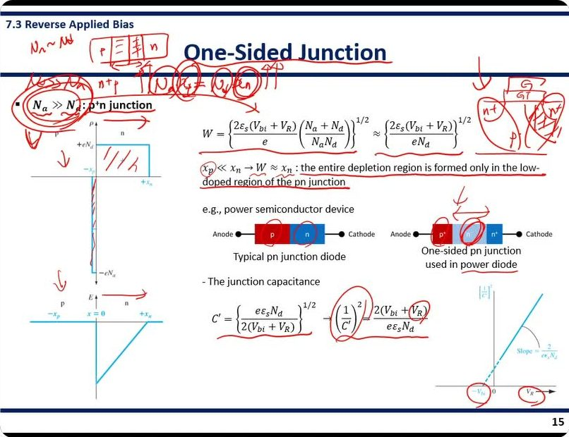
왼쪽 위
Na ~ Nd 와
p | = | ≠ | n 블록 — 농도가 비슷하면 공핍 영역이 양쪽에 고르게 퍼진다는 비교 그림. 그 아래
n⁺p. 제목 밑에
p⁺ · Na ≫ Nd · n 블록을 크게, "N
a ≫ N
d" 를 겹동그라미. 전하밀도 그래프의 n 쪽 직사각형에
빗금(공핍 영역이 여기), p⁺ 쪽 얇은 막대를 따라 빨간 덧선. x
p ≪ x
n 문장 두 줄 전체 밑줄. 오른쪽 위에
MOSFET 단면: G(게이트), 양옆
n⁺, 아래
p(body), n⁺ 아래 p 쪽에 빗금 — 공핍 영역이 body 에만 생긴다. 전력 다이오드의 n⁻ 에 동그라미와 ← → 화살표, "power diode" 밑줄. 영상 슬라이드에는 PDF 에 없는
"- The junction capacitance" 소제목이 C′ 식 위에 있다. (1/C′)², V
R, 그래프의 −V
bi, V
R 축에 동그라미.
강의 ①60:29 "If we form a pn junction with a similar doping concentration of the p-type and n-type semiconductor, then we have a depletion region spreading on the both sides of the pn junction."
강의 ①61:40 "Charge neutrality condition means that the product of the doping concentration and the depletion width is constant in each region. So Na times xp equal to Nd times xn. So basically the area under these two graphs are the same."
강의 ①62:45 "Because of huge difference in the doping concentration, almost the entire depletion layer extends in the low-doped region of the junction. … So there's no depletion region in the p-type region because of the high doping concentration."
강의 ①64:05 "[A] power diode … often uses p⁺n⁻ junction. This is because we can have a large depletion region spreading in this n⁻ region. Then this is beneficial for having a high breakdown voltage."
강의 ①64:20 "Another example of the one-sided junction is the pn junction appeared in the MOSFET. So remember the MOSFET structure. So you have a p body and you have n⁺, n⁺ for source and drain. And this is gate insulator and this is gate. And you have a one-sided junction in both source and drain region."
강의 ①64:42 "So in the one-sided junction, you just need to remember that the almost entire depletion region is formed only in the low-doped region of the pn junction. So in this case, MOSFET, the depletion region is formed in the body region only. And in this power diode, the depletion region is formed only [in] this n⁻ region. So that is a very important thing to remember for one-sided junction."
강의 ①65:32 "By plotting one over C′ square with respect to the reverse bias, then we can find the built-in potential from this x-axis intercept."
자료에 없음 ①64:20~65:07 MOSFET 예. 소스·드레인(n⁺)과 바디(p) 사이가 한쪽 접합이라 공핍 영역은 바디 쪽에만 생긴다. 슬라이드에는 전력 다이오드 예만 있고 MOSFET 는 판서와 말로만 나왔다.
자료에 없음 ①64:05 전력 다이오드가 n⁻ 층을 쓰는 이유 = 공핍 영역을 넓혀 항복 전압(breakdown voltage)을 높이기 위해서. 슬라이드에는 그림만 있다.
★ 시험 포인트 — "공핍 영역은 거의 전부 도핑이 옅은 쪽에 생긴다" — 말로 "very important thing to remember" 라고 했고, 슬라이드 문장에도 판서 밑줄이 두 줄 그어져 있다. 예로 전력 다이오드(n⁻ 층)와 MOSFET(body)를 같이 쓸 수 있게 한다. 식으로는 W ≈ {2εs(Vbi+VR)/(eNd)}1/2, (1/C′)² = 2(Vbi+VR)/(eεsNd) — x 절편 = −Vbi, 기울기 = 2/(eεsNd).
16쪽Junction Breakdown
7.4 Junction Breakdown · Reverse bias → increase in the depletion width & potential barrier → low current
13쪽 요약이다. 역방향 → 공핍 폭과 언덕 높이 증가 → 전류가 아주 작다.
Breakdown voltage: the particular voltage where the reverse-biased current will increase rapidly
항복 전압(breakdown voltage) = 역방향 전압을 계속 올릴 때 전류가 갑자기 확 늘어나는 특정 전압.
원인은 두 가지다. 제너 항복과 애벌랜치 항복.
Zener breakdown: Direct tunneling from the valence band on the p-side into the conduction band on the n-side
터널링(tunneling) = 넘을 수 없는 벽을 전자가 뚫고 지나가는 양자역학 현상. 벽이 얇을수록 잘 일어난다.
역방향을 세게 걸면 밴드가 가파르게 기울어, p 쪽 가전자대의 전자와 n 쪽 전도대의 빈자리가 같은 높이에서 아주 가까워진다. 그러면 전자가 그 사이를 곧바로 뚫고 건너간다. 이것이 제너 항복이다.
왼쪽 그림 — p 쪽 Ec·Ev 가 높고 n 쪽이 낮게 급경사로 떨어진다. p 쪽 Ev 의 전자(e⁻, 검은 점)가 오른쪽 n 쪽 Ec 로 수평 화살표를 따라 건너가고, 그 자리에 정공(h⁺, 흰 원)이 남아 왼쪽으로 간다.
Avalanche breakdown: High E-field (under reverse bias) → electrons (or holes) moving across the space charge region acquire sufficient energy → collision with atomic electrons within the depletion region: ionization of the atoms (impact ionization) → creation of electron-hole pairs → newly generated electrons and holes also have sufficient energy to ionize other atoms (avalanche process)
화살표를 하나씩 끊어 읽는다.
① 역방향 → 공핍 영역 전기장이 아주 크다. ② 그 안을 지나는 전자(또는 정공)가 전기장에 가속돼 큰 에너지를 얻는다. ③ 그 전자가 원자에 묶인 전자와 부딪쳐 떼어 낸다 — 충돌 이온화(impact ionization). ④ 전자–정공 쌍이 새로 생긴다. ⑤ 새로 생긴 것들도 가속돼 또 다른 원자를 이온화한다.
1 → 2 → 4 → 8 … 로 불어나는 것이 눈사태(avalanche)와 같아서 애벌랜치 항복이다.
오른쪽 그림 — 가운데가 공핍 영역(E-field ←). 왼쪽에서 p 쪽 소수 캐리어 전자(np)가 확산해 들어와 (−) 로 오른쪽으로 달리다 ⊗(충돌) 에서 (+)(−) 쌍을 만들고, 다시 ⊗ 에서 또 만든다. 오른쪽에서는 n 쪽 정공(pn)이 들어온다.
판서 ①66:03~68:12 · ②00:00~02:52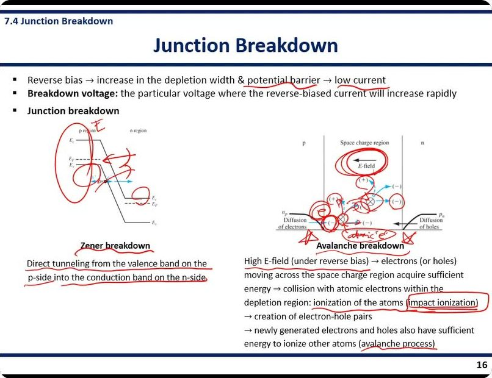
첫 줄 "potential barrier", "low current" 밑줄. 제너 그림 왼쪽에
E 와 p 쪽 밴드를 감싼 큰 타원, 가운데 얇아진 곳에 동그라미와 물결 화살표
∿∿(뚫고 지나감), n 쪽 E
c 에 작은 동그라미. 정의 문장 두 줄 밑줄. 애벌랜치 그림은 E-field 를 감싸고, ⊗ 충돌 지점과 (+)(−) 쌍들에
하나하나 동그라미를 치며 개수가 늘어나는 것을 따라갔다. 아래에
atomic e⁻. 양쪽 Diffusion of electrons/holes 옆에
✗ — 확산 전류가 아니라는 표시로 보인다. "impact ionization" 을 네모로 감싸고 "avalanche process" 밑줄.
강의 ①66:10 "When we apply a reverse bias, then there will be increase in the depletion width and potential barrier. And because of the high potential barrier, there will be no diffusion of electrons or holes. So we have no current flow."
강의 ①66:58 "So before applying a reverse bias, direct tunneling does not happen because of the wide potential barrier. But with the reverse bias, electron in the valence band in the p side has sufficient high energy. So the tunneling probability increased rapidly. So this is the Zener breakdown."
강의 ①67:19 "And another junction breakdown mechanism is avalanche breakdown. And this is actually dominant breakdown mechanism in the pn junction. So this is a really important mechanism."
강의 ②01:38 "This phenomenon is called an impact ionization. So this is the atomic electron, and this is the electron moving inside the depletion region. … The collision of this electron with the atomic electron will create another pair of hole and electron."
강의 ②02:41 "This phenomenon is called the avalanche process, because one electron generates two carriers, and two carriers will generate four, and four carriers will generate eight, something like that. Therefore when this phenomenon happens, the current will increase rapidly. So this is the major breakdown mechanism in the pn junction."
자료에 없음 ①67:19 · ②02:53 pn 접합에서 지배적인 항복은 애벌랜치라는 것. 슬라이드는 두 메커니즘을 나란히 놓았을 뿐 어느 쪽이 주된지 말하지 않는다. 그리고 1 → 2 → 4 → 8 로 불어나는 비유.
★ 시험 포인트 — ① 항복 전압의 정의 문장(밑줄). ② 제너 = p 쪽 가전자대 → n 쪽 전도대 직접 터널링. ③ 애벌랜치 = 충돌 이온화(네모 표시) → 전자–정공 쌍 → 연쇄. ④ "애벌랜치가 지배적, really important" — 말로 두 번(①67:19, ②02:53) 강조. 서술형이면 ③의 화살표 순서를 그대로 쓴다.
녹화 1 의 끝(①67:38~68:20)과 녹화 2 의 앞(②00:00~01:19)은 같은 대목이 겹쳐 있다(강의 영상을 이어 녹화하며 조금 되감음). 두 쪽 모두 이 쪽에 배정했다.
17쪽Linearly Graded Junctions
7.5 Non-Uniformly Doped Junctions — pn junction fabrication
지금까지는 균일한 p 덩어리와 n 덩어리를 붙인 계단 접합이었다. 실제로는 그렇게 못 만든다. 실제 공정을 보고, 그 결과 생기는 농도 분포를 다룬다.
n-Si : n-type substrate
균일하게 도핑된 n형 실리콘 기판(substrate)에서 시작한다. 기판 = 소자를 만들 바탕 웨이퍼.
SiO₂ / n-Si : Mask fabrication (photolithography & etching)
표면에 SiO₂(산화막)를 덮고 포토리소그래피(빛으로 무늬 찍기)와 식각(etching, 깎아 내기)으로 가운데를 뚫는다. 남은 산화막이 가림판(mask) 역할이다.
Ion implantation or diffusion ↓↓↓ : Doping
위에서 억셉터 원자를 넣는다. 방법은 이온 주입(가속해서 박아 넣기) 또는 확산(고온에서 스며들게 하기). 산화막이 없는 구멍으로만 들어간다.
p+ / n : pn junction
구멍 아래가 p⁺ 영역이 되고, 그 밑의 n 기판과 사이에 pn 접합이 생긴다.
Impurity concentration profile in the pn junction — Uniformly doped n-type semiconductor & Diffuse acceptor atoms through the surface
농도 분포를 보면, 도너(Nd)는 기판 전체에 균일하다. 억셉터(Na)는 표면에서 넣었으니 표면이 가장 진하고 깊어질수록 옅어진다.
오른쪽 위 그래프 — 가로축은 표면(Surface)에서의 깊이, 세로축은 불순물 농도. Nd 는 수평선, Na 는 표면에서 높았다가 내려오는 곡선. 두 선이 만나는 x = x′ 이 야금학적 접합이다. 그 왼쪽(Na > Nd)이 p 영역, 오른쪽이 n 영역. 접합 근처의 Na 곡선을 빨간 점선 직선으로 근사했다("Approximated as a linear function").
ρ(x) = eax dE(x)/dx = ρ(x)/εs = eax/εs
접합 근처에서 순 전하밀도(Nd − Na 에 e 를 곱한 것)가 위치에 비례하는 직선이라고 놓았다. a 는 그 기울기(농도 기울기)다. x < 0 이면 음(p 쪽), x > 0 이면 양(n 쪽).
이런 접합을 선형 경사 접합(linearly graded junction)이라 한다. 포아송 방정식은 8쪽과 같다.
E(x) = ∫(eax/εs)dx = (ea/2εs)(x² − x₀²)
x 를 적분하니 x² 이 된다. 공핍 영역이 −x₀ ~ +x₀ 로 좌우 대칭이고, 양 끝(x = ±x₀)에서 E = 0 이 되도록 상수를 정한 결과다. 전기장 그래프는 V 자가 아니라 아래로 볼록한 포물선이다.
Set x = −x₀ as a reference point, then φ(−x₀) = 0
9쪽처럼 p 쪽 끝을 전위 0 으로 잡는다.
φ(x) = −∫E(x)dx = −(ea/2εs)(x³/3 − x₀²x) + (ea/3εs)x₀³ φ(x₀) = (2/3)(eax₀³/εs) = Vbi
x² 을 적분하니 x³ 이 나온다. 상수 (ea/3εs)x₀³ 은 φ(−x₀) = 0 에서 정해진다. x = x₀ 를 넣으면 반대편 끝 전위, 곧 Vbi = (2/3)(eax₀³/εs).
계단 접합에서 Vbi 가 폭의 제곱에 비례했다면, 선형 경사 접합에서는 세제곱에 비례한다. 거꾸로 폭은 Vbi 의 세제곱근에 비례한다.
오른쪽 아래 그래프 — 전하밀도 ρ. −x₀ 에서 아래로, x = 0 을 지나 +x₀ 에서 위로 가는 원점을 지나는 직선이다. 양 끝에서 점선으로 0 으로 떨어진다(공핍 영역 경계).
판서 ②03:05~08:24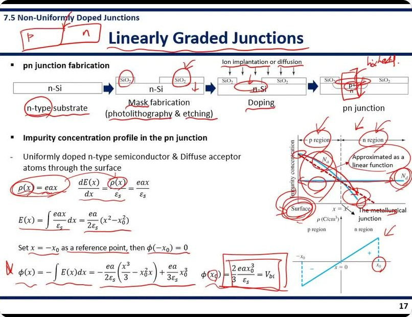
제목 왼쪽에
p | n 블록 — 지금까지의 "붙이기" 모형. 공정 그림의 n-type, SiO₂ 들, 이온 주입 구멍에 동그라미와 체크, Mask, photolithography, etching, Doping 밑줄. 마지막 그림의 p⁺ 영역을 네모로 감싸고 옆에
highest. —
표면 농도가 가장 높다. 농도 그래프의 p region, n region, Surface, N
a 곡선, N
d 에 동그라미, "Approximated as a linear function" 감싸고 곡선에서 직선으로 화살표. ρ(x) 동그라미, φ 식 앞에
N 표시, 결과
φ(x₀) = (2/3)eax₀³/εs = Vbi 를 네모로 감싸고 x₀ 동그라미. ρ 그래프 +x₀ 에 체크.
강의 ②03:05 "So far we assume that we can produce the pn junction by putting p-type and n-type semiconductors together, and this creates the abrupt junction here, and it will have a uniform doping concentration. However, in reality, it's impossible to make the pn junction like this."
강의 ②03:47 "We start with the n-substrate, and we create a pattern with a silicon dioxide by using the photolithography and etching process. This silicon dioxide acts as a mask, and it protects the underlying layer. Then doping is performed by using ion implantation or diffusion, and the opening area will be doped only."
강의 ②04:34 "The doping concentration will be the highest at the surface, and it will be reduced as it goes into the substrate."
강의 ②05:58 "The region with the higher acceptor concentration than the donor concentration is considered as a p-type region. This is basically [a] compensated semiconductor, so it has both acceptor and donor atoms, but this region, because it has a higher acceptor concentration, is considered as a p-type region."
강의 ②07:14 "We set the surface, x equal to minus x₀, as [a] reference point. … By putting the x₀ into this potential function we can find the equation for the built-in potential. So this is the built-in potential of the linearly graded junction."
자료에 없음 ②05:58 보상 반도체(compensated semiconductor) — 억셉터와 도너가 둘 다 들어 있는 반도체. 어느 쪽이 더 많은가로 p 형/n 형이 갈린다. 접합 근처의 p 영역이 바로 이런 상태다.
②07:14 부근 몇 초(07:14~07:19)는 음성 인식이 깨졌다. 재인식으로 "set … x = −x₀ as reference point" 까지는 확인했다. 정확한 문장은 직접 들어볼 것.
★ 강조 — 판서 네모: Vbi = (2/3)(eax₀³/εs), "highest"(표면 농도 최대). 그리고 3쪽에서 미리 말한 "계단 접합은 ideal, 선형 경사는 practical". ρ = eax 로 놓는 근거(접합 근처 Na 를 직선으로 근사)와 함께 쓴다.
부록족보 미출제 · 강의에서만 짚은 것 (2020~2024 기말 대조)
대조 범위: 기말 족보 2020·2021·2022·2023·2024(시험지 원본 + 이원식 풀이). 2021 1~5번은 시험지에 문항이 비어 있어 대조하지 못했다.
강의: 2026-11-01 화면 녹화 두 개(①=68분, ②=11분). 타임스탬프는 녹화 기준이다. 쪽 번호는 강의자료 PDF 기준이다.
0. 족보에 이미 나온 Ch.7 — 여기서는 빼고 본다
| 유형 | 출제 |
|---|
| 전하 분포 → 전기장 분포 그래프 | 2020 7a, 2022 3a, 2023·2024 1a |
| p·n 쪽 EF − EFi 위치 → Vbi 계산 | 2020 7b, 2021 7a, 2022 3b, 2023·2024 1b (매년) |
| 에너지 밴드 다이어그램 그리기 | 2020 7c, 2021 7a, 2022 3a, 2023·2024 1a (매년) |
| 도핑 한쪽을 줄이면 뭐가 바뀌나 / 어느 쪽 공핍 영역이 넓나 (Naxp = Ndxn) | 2021 7b, 2022 3c, 2023·2024 1c |
| 애벌랜치 항복 설명 (+ 항복 전압 높이는 방법) | 2021 8b, 2022 3e, 2023 2b, 2024 2b |
| xn, xp, W 식 | 공식 시트에 주어짐(2021~) |
흐름: Ch.7 은 매년 "pn 접합 한 문제(전하 분포 → 밴드 → Vbi → 도핑 바꾸면?)" + "역방향 항복 서술" 두 덩어리로 나왔다. 아래는 그 밖에서 교수님이 말이나 판서로 짚은 것들이다.
1. 한 번도 안 나왔고, 교수님이 따로 짚은 것
① 접합 용량 C′ = εs/W — 평행판 축전기와 같은 꼴
14쪽족보 0회
①59:19 "This is basically the same expression for the capacitance per unit area of the parallel plate capacitor. … metal and insulator … ε A over W. And if you normalize it by the area, then it's going to be ε over W."
①59:54 "And this junction capacitance is also called as a depletion layer capacitance."
판서: 여백에 M | 절연체 | M 그림과 C = εA/W → ε/W 를 따로 그리고, 슬라이드 끝의 εs/W 에 동그라미. "deplet. layer capacitor" 라고 이름도 적었다. dQ′ 띠에 빗금을 치며 "dQ′ is the area in this graph" 라고 설명했다.
답안 골격 — 공핍 영역 양쪽에 이온화된 억셉터(−)와 도너(+)가 분리돼 있으므로 접합은 용량을 가진다. C′ = dQ′/dVR, dQ′ = eNddxn = eNadxp. xn(Vbi+VR) 를 미분하면 C′ = {eεsNaNd / 2(Vbi+VR)(Na+Nd)}1/2 = εs/W. 공핍 영역이 절연체 역할을 하는 평행판 축전기의 단위면적당 용량과 같고, 공핍층 용량(depletion layer capacitance)이라고도 한다. VR↑ → W↑ → C′↓.
② (1/C′)² – VR 그래프: x 절편 = −Vbi
15쪽족보 0회
①65:32 "By plotting one over C′ square with respect to the reverse bias, then we can find the built-in potential from this x-axis intercept."
판서: (1/C′)², VR, 그래프의 −Vbi 절편에 각각 동그라미. 2021·2023·2024 MOS 쪽에서 "그래프에서 값 뽑아내기(이동도·VT 추출)"를 반복해서 낸 교수님이라, 같은 형식이 pn 접합 C–V 로 나올 수 있다.
답안 골격 — p⁺n 이면 C′ = {eεsNd/2(Vbi+VR)}1/2 → (1/C′)² = 2(Vbi+VR)/(eεsNd). VR 에 대한 직선이므로 기울기 2/(eεsNd) 에서 Nd, 가로축 절편 −Vbi 에서 Vbi 를 얻는다.
③ 역방향 바이어스에서 커지는 세 가지 — Vtotal, W, Emax와 그 인과
13쪽식으로는 0회
2022 3e 는 문제 지문에 "Vbi + VR 로 장벽이 커진다"를 주고 항복만 물었다. 왜 W 가 커지는지, 식이 어떻게 바뀌는지는 안 물었다.
①54:18 "So we have two quasi-Fermi levels here. … these two quasi-Fermi energy levels have energy difference here due to the applied reverse bias. And because of this, we have increased potential barrier."
①55:20 "The increased electric field in the depletion region implies that the total number of charges in the depletion region also increases. So in order to increase the number of charges in the depletion region, the space charge width has to be increased."
판서: 인과 세 줄(Eapp → 전하 수↑ → W↑)에 전부 밑줄, 식마다 VR 에 동그라미, W 에 ↑. 제목 옆에 "forward bias" 를 써서 반대말을 연결했다. 준페르미 준위(quasi-Fermi level)라는 이름은 슬라이드에 없고 말로만 나왔다.
답안 골격 — 역방향 바이어스 = p 기준 n 에 + 전압. 평형이 깨져 EF 가 EFp, EFn(준페르미 준위)로 eVR 만큼 갈라진다. Vtotal = Vbi + VR. 외부 전기장이 더해져 공핍 영역 전기장↑ → 필요한 이온 전하↑ → 도핑은 고정이므로 W↑: W = {2εs(Vbi+VR)/e · (Na+Nd)/(NaNd)}1/2, Emax = −{2e(Vbi+VR)/εs · NaNd/(Na+Nd)}1/2 = −2(Vbi+VR)/W.
④ 제너 항복 (터널링)
16쪽족보 0회 — 항복은 매년 "predominant" 만 물음
①66:58 "Before applying a reverse bias, direct tunneling does not happen because of the wide potential barrier. But with the reverse bias, electron in the valence band in the p side has sufficient high energy. So the tunneling probability increased rapidly. So this is the Zener breakdown."
족보는 4년 내리 "주된(predominant) 메커니즘"을 물어 답이 애벌랜치였다. 교수님도 "avalanche is actually dominant … really important" 라고 했다(①67:19, ②02:53). 그래서 제너는 "두 메커니즘을 비교하라"는 식으로 바뀌어 나올 때만 필요하다. 판서: 제너 그림의 얇아진 장벽에 동그라미와 물결 화살표, 정의 문장 밑줄.
답안 골격 — 제너 항복: 강한 역방향 바이어스로 밴드가 가파르게 기울어 장벽이 얇아지면, p 쪽 가전자대 전자가 n 쪽 전도대로 직접 터널링해 전류가 급증한다. 애벌랜치와 달리 충돌·증식이 아니라 양자역학적 투과다. pn 접합에서 지배적인 것은 애벌랜치다.
⑤ 선형 경사 접합 — 실제 공정과 Vbi = (2/3)eax₀³/εs
17쪽 (7.5)족보 0회 — 7.5 절 전체가 미출제
②03:05 "So far we assume that we can produce the pn junction by putting p-type and n-type semiconductors together … However, in reality, it's impossible to make the pn junction like this."
②03:47 "We start with the n-substrate, and we create a pattern with a silicon dioxide by using the photolithography and etching process. This silicon dioxide acts as a mask … Then doping is performed by using ion implantation or diffusion, and the opening area will be doped only."
②04:34 "The doping concentration will be the highest at the surface, and it will be reduced as it goes into the substrate."
②05:58 "This is basically [a] compensated semiconductor, so it has both acceptor and donor atoms, but this region, because it has a higher acceptor concentration, is considered as a p-type region."
①18:17 (목차에서 미리) "그래서 이거는 사실 이제 아이디얼한 거고요. 이것은 우리가 실제로 쓰는 프랙티컬한 거죠. 리얼리티."
판서: 공정 그림 단계마다 체크, p⁺ 영역 옆에 "highest.", 결과 φ(x₀) = (2/3)eax₀³/εs = Vbi 를 네모로 감쌈. 목차 쪽에서도 "ideal ↔ practical!" 을 판서했다. 보상 반도체(compensated semiconductor)는 슬라이드에 없는 말이다.
답안 골격 — 실제 pn 접합은 균일 도핑 n 기판에 SiO₂ 마스크(포토리소그래피·식각)를 만들고 이온 주입 또는 확산으로 억셉터를 넣어 만든다. 억셉터 농도는 표면에서 최대이고 깊이에 따라 줄어, Na = Nd 인 곳이 야금학적 접합이 된다. 접합 근처를 직선으로 근사해 ρ(x) = eax → E(x) = (ea/2εs)(x² − x₀²) → Vbi = φ(x₀) = (2/3)eax₀³/εs.
⑥ 한쪽 접합의 실제 예 — 전력 다이오드 n⁻ 층, MOSFET body
15쪽족보: 개념은 간접 출제, 예시는 0회
"도핑 한쪽을 줄이면?"(2021 7b, 2023·24 1c)이 사실상 한쪽 접합 문제다. 하지만 p⁺n 이라는 이름, W ≈ xn 근사, 실제 소자 예는 묻지 않았다. 2024 2b "항복 전압을 높이는 방법"의 답이 바로 이 쪽의 전력 다이오드 이야기다.
①64:05 "[A] power diode … often uses p⁺n⁻ junction. This is because we can have a large depletion region spreading in this n⁻ region. Then this is beneficial for having a high breakdown voltage."
①64:42 "In the one-sided junction, you just need to remember that the almost entire depletion region is formed only in the low-doped region of the pn junction. So in this case, MOSFET, the depletion region is formed in the body region only. And in this power diode, the depletion region is formed only [in] this n⁻ region. So that is a very important thing to remember for one-sided junction."
판서: 오른쪽 위에 MOSFET 단면(G, 양옆 n⁺, 아래 p body, body 쪽 빗금)을 따로 그렸다 — 슬라이드에는 MOSFET 가 없다. 전력 다이오드 n⁻ 에 동그라미와 ← → 화살표.
답안 골격 — Na ≫ Nd(p⁺n) 이면 Naxp = Ndxn 에서 xp ≪ xn, W ≈ xn ≈ {2εs(Vbi+VR)/(eNd)}1/2. 공핍 영역은 거의 전부 저농도 쪽에 생긴다. 예: 전력 다이오드 p⁺n⁻n⁺ — 넓은 n⁻ 공핍 영역이 같은 전압에서 전기장을 낮춰 항복 전압을 높인다. MOSFET 의 n⁺ 소스·드레인/p body 접합 — 공핍 영역은 body 에만 생긴다.
2. 족보 문제를 풀 때 쓰이지만, 근거로 따로 짚은 말
⑦ 공핍 영역 이름 두 개의 이유
3·5쪽
①14:48 "이 NA−는 … 도핑 아톰이기 때문에, 임퓨리티 아톰이라서, 공간적으로 박혀 있습니다. 그래서 이것은 이제 공간 전하라고 하는 거예요." ①15:30 "자유전하가 없기 때문에 depletion 영역이라고 하기도 한다."
space charge region = 움직이지 못하는 이온화된 불순물 전하만 남은 영역. depletion region = 자유 캐리어가 확산·재결합으로 비어(공핍) 있는 영역. 같은 영역이다.
⑧ "각각은 중성이다 — really important"
5쪽
①21:37 "Don't forget these semiconductors are neutral, because a charge by the electron or hole is balanced with the charge by the ionized impurity atoms. … So this is really important."
족보 "전하 분포부터 그려라"(2022 3a, 2023·24 1a)의 출발점이다. 공핍 영역의 ±전하는 새로 생긴 게 아니라, 캐리어가 빠지면서 상쇄돼 있던 이온 전하가 드러난 것이다. 열평형 조건은 diffusion force = E-field force(판서 밑줄).
⑨ 전기장 경계 조건 두 개 — ρ = 0 → E = 0, 그리고 연속
8쪽
①32:13 "No charge carrier means electric field equal to zero in this region. … And also electric field is continuous because there's no [surface] charge density."
판서로 중성 영역 양쪽에 "ρ = 0 → E = 0" 을 두 번 썼다. 족보는 그래프만 그리게 했고 적분 상수를 정하는 근거는 묻지 않았다.
x = −xp, +xn 에서 E = 0 (중성 영역), x = 0 에서 E 연속(표면 전하 없음) → Naxp = Ndxn, |E| 는 접합면에서 최대.
⑩ 밴드 = 전자의 위치 에너지, E = −eφ
10쪽
①41:07 "Since the energy band diagram basically describes the potential energy for the electron … we need to multiply the elementary charge of the electron, which is minus e."
판서: 제목 옆 "PE for electrons.", 두 그래프 사이 "X(−e)". 족보 밴드 문제에서 "왜 S 자로 이어지는가"를 한 줄로 쓸 수 있는 근거다.
⑪ 수치 감각
2·11·12쪽
①46:09 "The thermal voltage becomes 0.0259 volt … you will encounter this number very often, so it's good to memorize this number." ①47:57 "Remember that this built-in potential is not very high. So sometimes we can neglect this built-in potential." ①52:22 "1.34 × 10⁴ volts per centimeter, which is pretty high."
Vt = 0.0259 V @ 300 K(시험지 상수표에 kT = 0.0259 eV 로 주어짐). Vbi 는 1 V 미만이라 큰 VR 앞에서는 Vbi + VR ≈ VR 로 버린다. Example 7.2(Na = 10¹⁶, Nd = 10¹⁵): Vbi = 0.635 V, W = 0.951 μm, xn = 0.865 μm, xp = 0.0865 μm, |Emax| = 1.34×10⁴ V/cm. 2쪽: Nd = 10¹⁶, nᵢ = 10¹⁰ → p₀ = 10⁴. 주의: Example 7.1 은 판서·말로 0.731 V 였지만 계산하면 0.713 V 다.
⑫ 4장 복습 — EF 위치를 정의로 끌어내기
2쪽 (PDF 빈 쪽, 영상 판서만)
①06:30 "T가 0K일 때 도너 레벨에는 일렉트론이 이렇게 머물고 있습니다. 그럼 페르미 레벨 위치는 도너 레벨보다는 위에 있어야 된다는 거 알 수 있죠." ①00:27·12:45 챕터 4 복습을 두 번 당부.
족보의 "EF 위치를 EFi 기준으로 구하라"는 매년 문제의 기초다. 0 K 에서 EF 아래는 꽉, 위는 텅 → n형은 도너 준위 위(Ec 근처), p형은 억셉터 준위 아래(Ev 근처).
인용은 자동 음성 인식 결과를 문맥으로 복원했다. 대괄호 [ ] 는 문맥으로 보충한 말이다. 전체 맥락은 이 문서의 같은 쪽에 있다.
부록녹화 2 끝부분
강의 ②08:27 "So this is the end of chapter 7."
②08:30 이후(약 2분 30초)는 강의가 끝난 뒤 녹화가 이어진 구간이다. 인식된 말은 의미 없는 한 줄뿐이고, 판서 추출 결과도 검은 화면이다. 내용 없음.
부록이 문서 읽는 법 · 출처
타임스탬프 ① = 화면 녹화 "2026-11-01 175506.mp4"(68분), ② = "2026-11-01 181812.mp4"(11분). 원 강의 영상 기준으로는 ①이 0:00~1:08:14, ②가 대략 1:06:24~1:15:01 이다.
판서 이미지 각 쪽 판서 사진은 영상에서 그 쪽이 넘어가기 직전, 잉크가 가장 많이 쌓인 프레임을 고른 것이다. PDF 강의자료에는 손필기가 하나도 없으므로 모든 손글씨는 영상에서만 볼 수 있다.
자료와 영상이 다른 곳 ① 12쪽 예제 번호: PDF "Example 7.1" → 영상 "Example 7.2". ② 15쪽: 영상 슬라이드에만 "- The junction capacitance" 소제목. ③ 2쪽 Overview: PDF 는 빈 쪽, 영상에 12분 분량 판서. ④ 11쪽 예제 답: 판서·강의 0.731 V, 계산상 0.713 V.
강의 인용 자동 음성 인식 결과를 문맥으로 복원했다. 영어 대목의 관사·조사, 한국어 대목의 어미는 실제와 조금 다를 수 있다. 대괄호 [ ] 는 인식이 흐려 문맥으로 보충한 말이다. 인식이 처음 실패한 영어 구간(①20:40~22:56, 34:40~35:36, 42:10~42:36, 62:25~63:50, 64:20~67:38, ②07:05~07:22)은 영어 모델로 다시 인식해 채웠다.
맨 위로